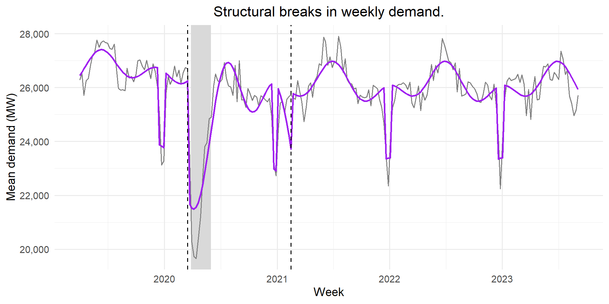
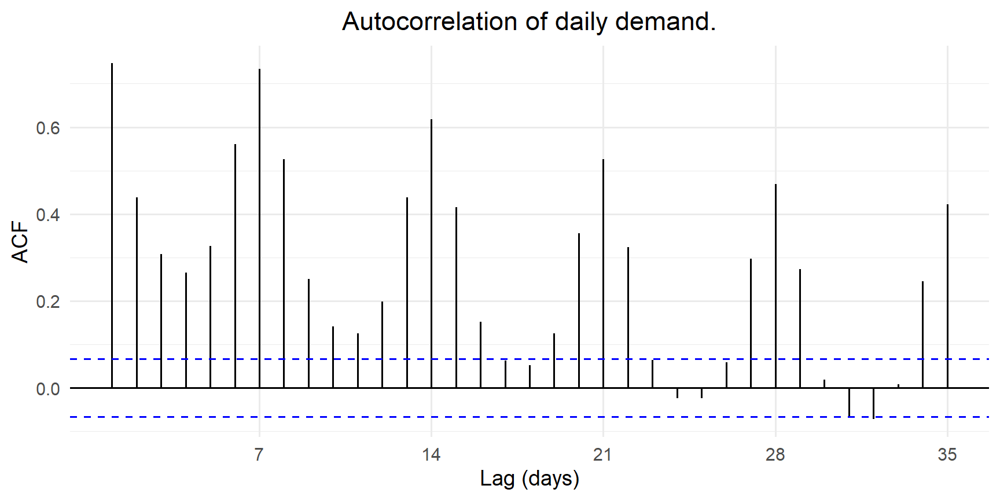
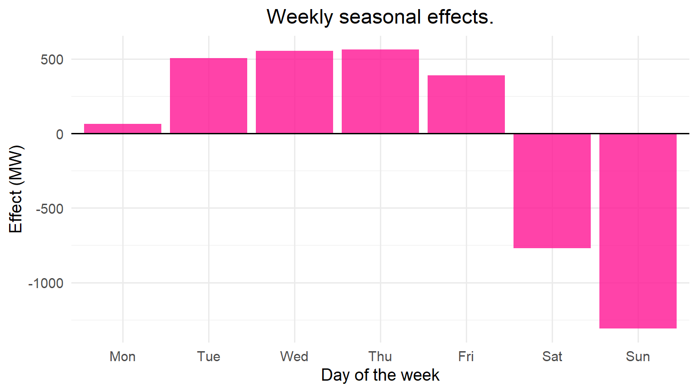
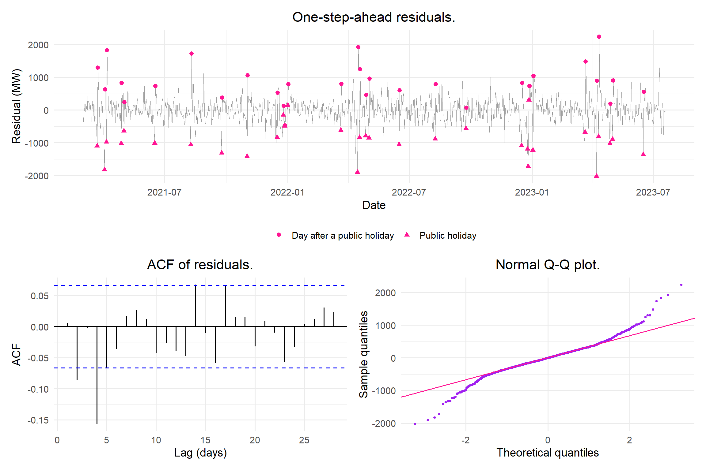
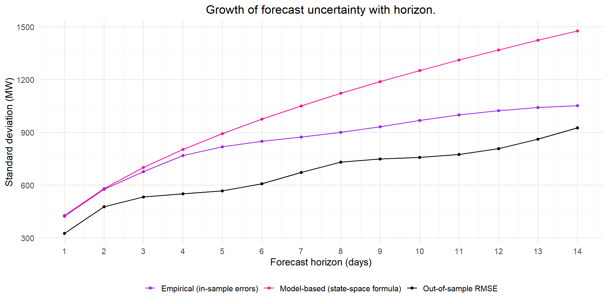
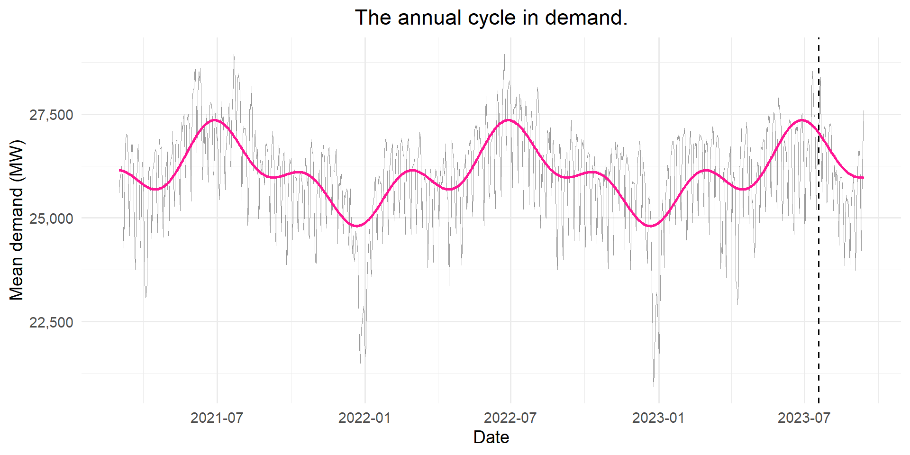
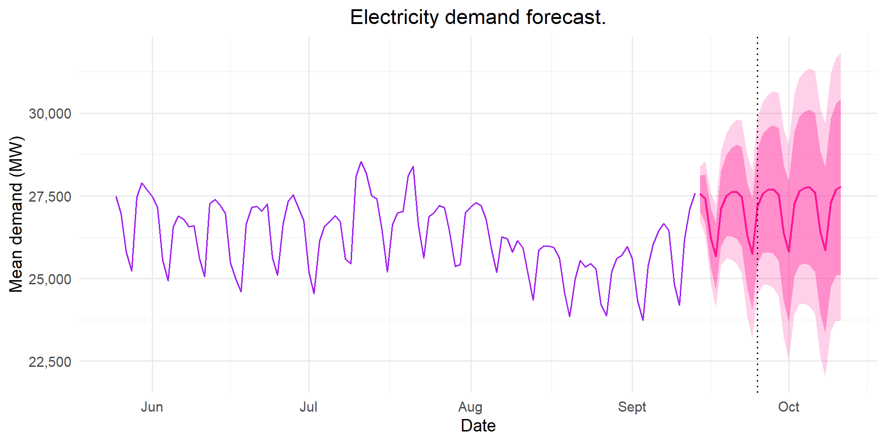

Reliable electricity supply is central to a country’s economy. Balancing supply against demand is a daily problem for the national grid. In South Africa, Eskom has to make daily decisions on which power stations to run, whether to use expensive diesel generators and whether load shedding is needed. These decisions depend on accurate forecasts of electricity demand. If demand is underestimated, Eskom may need expensive emergency generation or have to implement load shedding. If demand is overestimated, fuel and generating capacity are wasted.
Daily electricity demand has a strong weekly pattern with more electricity being used during the week, when industries and offices are open. An annual pattern is also present in the data with larger amounts of electricity being consumed during the winter months as well as a level that drifts with economic activity. Exponential smoothing models adapt to the level of the most recent data quickly and the Holt-Winters method handles seasonality present in the data (Hyndman & Athanasopoulos, 2021). Writing exponential smoothing models as an ETS state-space model gives a likelihood that can be used for estimation, model selection and prediction intervals (Hyndman et al., 2008).
This project uses exponential smoothing to forecast daily South African electricity demand 1 to 14 days ahead. An exponential smoothing model is selected and compared to the naive and seasonal naive benchmarks. The selected Holt-Winters model is implemented from first principles and verified against forecast::ets() (Hyndman & Khandakar, 2008). A rolling forecast origin is used to evaluate both point forecasts and prediction intervals. This project also tests whether removing the annual cycle improves forecasts, since a model with a weekly season cannot capture the underlying annual cycle.
Data
The data come from the Eskom Data Portal (Eskom, 2024). They are hourly system data covering 1 April 2019 to 31 March 2024. The variable used is RSA Contracted Demand, measured in MW. It is the hourly average demand supplied by all generators contracted to Eskom. These include Eskom’s own power stations and the independent power producers. International exports are excluded. The series records the demand that was actually supplied, so it falls during load shedding. The data are aggregated system totals and contain no personal information. No consent, anonymisation or POPIA steps were therefore needed.
Data access instructions. The data file ESK6816.csv was provided by the course lecturer. It was originally sourced from the Eskom Data Portal (https://www.eskom.co.za/dataportal/). To reproduce the analysis, save the file as _data/ESK6816.csv in the same folder as this document. The same series can also be downloaded from the portal under the hourly system data for 1 April 2019 to 31 March 2024.
Show code
# Read in data (the date column is read as text and parsed below):eskom_raw =read_csv("_data/ESK6816.csv",col_types =cols(.default =col_double(),`Date Time Hour Beginning`=col_character()))# Hourly demand:eskom_hourly = eskom_raw |>transmute(datetime =ymd_hm(`Date Time Hour Beginning`),demand =`RSA Contracted Demand`) |>arrange(datetime)# Daily mean demand:eskom_daily = eskom_hourly |>filter(!is.na(demand)) |>mutate(date =as_date(datetime)) |>group_by(date) |>summarise(hours =n(),demand =mean(demand),.groups ="drop") |>filter(hours ==24)# South African public holidays in the modelling period:sa_holidays =as.Date(c(# 2021"2021-01-01", "2021-03-22", "2021-04-02", "2021-04-05", "2021-04-27", "2021-05-01","2021-06-16", "2021-08-09", "2021-09-24", "2021-11-01", "2021-12-16", "2021-12-25","2021-12-27",# 2022"2022-01-01", "2022-03-21", "2022-04-15", "2022-04-18", "2022-04-27", "2022-05-02","2022-06-16", "2022-08-09", "2022-09-24", "2022-12-16", "2022-12-25", "2022-12-26","2022-12-27",# 2023"2023-01-02", "2023-03-21", "2023-04-07", "2023-04-10", "2023-04-27", "2023-05-01","2023-06-16", "2023-08-09", "2023-09-25"))
Daily demand is calculated as the average of the 24 hourly values for each day. The data cover 1627 complete days, from 1 April 2019 to 13 September 2023. There are no missing hourly values. There is no demand data after 13 September 2023, so the series ends on this date. Public holidays that fell on a Sunday and were observed on the Monday are included in the list of holidays.
The models are fitted to data from 1 March 2021 onwards. This is the day South Africa moved to lockdown alert level 1, and it falls on a Monday. Starting here removes the lockdown period, when demand fell sharply and the normal weekly pattern was disrupted (Figure 1). The structural break test in Figure 2 supports this starting point. Starting on a Monday also means that the first day of each weekly cycle is always a Monday. The training set runs from 1 March 2021 to 19 July 2023 (871 days). The test set is the last 8 weeks, from 20 July 2023 to 13 September 2023 (56 days). This gives sufficient forecast origins to evaluate forecasts up to 14 days ahead.
Figure 1: Daily mean RSA contracted demand from April 2019 to September 2023. The dark band is the hard lockdown (alert levels 5 and 4, 27 March to 31 May 2020). The light band covers the remaining lockdown restrictions up to 28 February 2021. The dashed line marks the start of the modelling period.
Figure 1 shows that daily demand fluctuates around 26,000 MW. There is a clear weekly and annual pattern. The hard lockdown in 2020 is the biggest disruption in the series. Average demand in April 2020 was approximately 24% lower than in early March 2020. Demand recovered slowly through 2020 but stayed below typical levels while Covid-19 restrictions were still in place. There is a sharp drop present in the series that corresponds to the period between Christmas and New Year, since over this period many industries shut down. There is no clear long-term trend in the data. After the lockdown period, demand stays at a similar level from 2021 to 2023. This can be explained by slow economic growth and ongoing load shedding, which kept demand from rising over this period.
The lockdown changed both the level of demand and the weekly pattern. Including this period would distort the model estimates, so the models are only fitted to data after the lockdown. A structural break test is used to decide when the lockdown period ends.
Structural break over the lockdown
To identify when the lockdown period ends, the Bai-Perron structural break test is applied to weekly average demand from April 2019 to September 2023 (Bai & Perron, 2003; Zeileis et al., 2002). Weekly averages are used so that the weekly pattern does not affect the results. The test fits a regression model to the series and estimates the dates at which its coefficients change. The regression includes Fourier terms to model the annual cycle in demand as well as an indicator variable for the Christmas and New Year weeks to account for the sharp drop in demand over the holidays. The number of breaks is selected using BIC and each segment is required to be at least 48 weeks long, which ensures that every segment contains a full annual cycle and one Christmas period. This prevents the seasonal drop from being interpreted as a structural break.
Show code
# Weekly mean demand:eskom_weekly = eskom_daily |>mutate(week =floor_date(date, "week", week_start =1)) |>group_by(week) |>summarise(days =n(), demand =mean(demand), .groups ="drop") |>filter(days ==7)# Annual Fourier terms at the middle of each week:# Christmas and New Year indicator: angle_w =2* pi *yday(eskom_weekly$week +3) /365.25is_xmas =function(d) (month(d) ==12&day(d) >=22) | (month(d) ==1&day(d) <=3)weekly_df = eskom_weekly |>mutate(sin1 =sin(angle_w), cos1 =cos(angle_w),sin2 =sin(2* angle_w), cos2 =cos(2* angle_w),xmas =as.numeric(map_lgl(week, ~any(is_xmas(.x +0:6)))))bp_formula = demand ~ sin1 + cos1 + sin2 + cos2 + xmas# Bai-Perron breakpoints:bp =breakpoints(bp_formula, data = weekly_df, h =48)n_breaks =length(bp$breakpoints)break_dates = weekly_df$week[bp$breakpoints]# supF test for a single break at an unknown date:fs =Fstats(bp_formula, data = weekly_df, from =48)sup_test =sctest(fs, type ="supF")weekly_df = weekly_df |>mutate(fitted =fitted(bp, breaks = n_breaks))
Show code
ggplot(data = weekly_df, mapping =aes(x = week)) +annotate("rect", xmin =as.Date("2020-03-27"), xmax =as.Date("2020-05-31"),ymin =-Inf, ymax =Inf, fill ="grey85") +geom_line(aes(y = demand), col ="grey50") +geom_line(aes(y = fitted), col = col_main, linewidth =1) +geom_vline(xintercept = break_dates, linetype ="dashed") +scale_y_continuous(labels = scales::comma) +labs(title ="Structural breaks in weekly demand.", x ="Week", y ="Mean demand (MW)")

Figure 2: Weekly mean demand (grey) and the fitted segmented regression with annual Fourier terms and a Christmas indicator (purple). Dashed lines mark the estimated break dates. The shaded area is the hard lockdown.
The supF test rejects the null hypothesis of no structural break (p-value = 2.3^{-8}) and BIC selects 2 breaks (Figure 2). The first segment ends in the week of 16 March 2020. This was right before the hard lockdown began. The second segment ends in the week of 15 February 2021. This coincides with the end of the adjusted alert level 3 restrictions and South Africa’s move to alert level 1 on 1 March 2021 (South African Government, 2021). Thus, the middle segment captures the full lockdown period, the slow recovery as well as the second wave restrictions over December 2020 and January 2021. After the second break, electricity demand returns to a seasonal pattern similar to the one observed before the lockdown. However, the winter peaks are slightly lower, which may reflect the effect of load shedding. Based on these results, observations prior to 1 March 2021 are not included in the analysis. The weekly residuals are autocorrelated, so the p-value is approximate. The break dates are clearly supported by Figure 2.
Show code
ggplot(data = model_df, mapping =aes(x = weekday, y = demand)) +geom_boxplot(fill = col_green, colour = col_green, alpha =0.6, outlier.size =0.8) +scale_y_continuous(labels = scales::comma) +labs(title ="Demand by day of the week.",x ="Day of the week",y ="Mean demand (MW)")
Figure 3: Distribution of daily demand by day of the week (1 March 2021 to 13 September 2023).
Figure 3 shows the weekly pattern in electricity demand. Demand is highest from Tuesday to Thursday, with very similar levels across these three days. It is slightly lower on Mondays and Fridays and drops considerably over the weekend, with Sunday having the lowest demand.
The interquartile ranges for electricity demand are of a similar width for every day of the week. Under a multiplicative seasonal pattern, the spread of observations would increase with the level of demand, so the weekday ranges would be noticeably wider than the weekend ranges. This is not observed, which suggests an additive weekly seasonal component. There are several weekday observations with very low demand, which could be due to public holidays.
Show code
ggAcf(y_train, lag.max =35) +labs(title ="Autocorrelation of daily demand.", x ="Lag (days)", y ="ACF")

Figure 4: ACF of daily demand in the training set.
The ACF in Figure 4 shows strong weekly seasonality, with clear peaks at lags 7, 14, 21, 28 and 35. The lags on either side of these peaks are also large, while the autocorrelations between the peaks fall close to zero. Demand is highly correlated with the demand of the previous day (lag 1, ACF \(\approx\) 0.74) and almost as strongly correlated with demand one week earlier (lag 7, ACF \(\approx\) 0.73). Thus, demand on a given day is strongly related to demand on the previous day as well as demand on the same day of the previous week. The weekly peaks decrease gradually, from approximately 0.73 at lag 7 to 0.42 at lag 35. This shows that the level of demand is highly persistent. Both features present in the ACF plot suggest that a suitable model needs a weekly seasonal component as well as a level that carries over from one day to the next.
Figure 5: MSTL decomposition of daily demand in the training set into a trend, a weekly seasonal component (period 7), an annual seasonal component (period 365.25) and a remainder.
Figure 5 shows the MSTL decomposition of daily electricity demand into a trend, a weekly seasonal component, an annual seasonal component and a remainder. The trend declines slightly through 2021, rises during 2022 and falls through 2023. The trend stays between approximately 25,900 MW and 26,100 MW, which is less than 1% of average demand. Thus, there is no consistent upward or downward trend, suggesting that a trend component is not needed in the model. The weekly seasonal component follows a regular pattern, ranging from approximately +700 MW on weekdays to approximately −1,500 MW on Sundays. Its size remains fairly constant over time. The annual seasonal component shows a large drop of about 4,000 MW over the Christmas and New Year period as well as a smaller increase in demand during the winter months. The remainder shows only small fluctuations, apart from a few sharp spikes (see Table 5).
Holt-Winters exponential smoothing can only model one seasonal period. Thus, the weekly pattern is modelled as the seasonal component and the annual cycle is left to the level. This decision is assessed in the extension at the end of the model evaluation.
Model fitting
Exponential smoothing models
The candidate models are written in state-space form (Hyndman et al., 2008; Department of Statistical Sciences, 2026) and are shown in Table 1.
Table 1: Candidate exponential smoothing models with weekly seasonal period \(m = 7\) and \(\varepsilon_t \sim N(0, \sigma^2)\). For the additive models \(y_t = \mu_t + \varepsilon_t\), and for ETS(M,N,M) \(y_t = \mu_t(1 + \varepsilon_t)\).
Simple exponential smoothing ignores the weekly pattern and is included as a reference. ETS(A,N,A) includes an additive weekly season with no trend, which matches the flat trend in Figure 5. ETS(A,Ad,A) includes a damped trend to model any drift in the level. ETS(M,N,M) allows the weekly pattern to grow with the level, which Figure 3 suggests is unnecessary. All parameters and initial states are estimated by maximum likelihood and the models are compared with the naive and seasonal naive benchmarks.
Fitting with ets()
Show code
# Candidate models on the training set:fit_ann =ets(y_train, model ="ANN")fit_ana =ets(y_train, model ="ANA")fit_aada =ets(y_train, model ="AAA", damped =TRUE)fit_mnm =ets(y_train, model ="MNM")# Automatic selection by AICc (for comparison):fit_auto =ets(y_train)ets_list =list("ETS(A,N,N)"= fit_ann,"ETS(A,N,A)"= fit_ana,"ETS(A,Ad,A)"= fit_aada,"ETS(M,N,M)"= fit_mnm)# Function to extract one smoothing parameter (NA if the model does not have it):get_par =function(fit, name) {if (name %in%names(fit$par)) unname(fit$par[name]) elseNA_real_}
Table 2: Training-set comparison of the candidate exponential smoothing models, in increasing order of AICc. The number of parameters includes the initial states.
Model
Parameters
AICc
BIC
\(\alpha\)
\(\beta\)
\(\gamma\)
\(\phi\)
Training RMSE
ETS(A,N,A)
9
16463.2
16510.7
0.9154
-
1e-04
-
426.0
ETS(A,Ad,A)
12
16470.7
16532.3
0.9125
1e-04
1e-04
0.952
426.3
ETS(M,N,M)
9
16490.2
16537.6
0.8865
-
1e-04
-
421.8
ETS(A,N,N)
2
17683.4
17697.7
0.9997
-
-
-
865.2
Table 2 shows that all three models with a weekly seasonal component have a much lower AICc than simple exponential smoothing, ETS(A,N,N), and approximately half its training RMSE. This suggests that the weekly pattern is the most important feature of the series. ETS(A,N,A) has a lower AICc than ETS(M,N,M). This is consistent with the additive weekly pattern observed in Figure 3. There is little evidence that the inclusion of a damped trend improves model performance. The estimated \(\beta\) is essentially zero, indicating that the trend does not change over the training period. ETS(A,Ad,A) has a higher AICc than ETS(A,N,A). This suggests that any improvement in fit is not sufficient to justify the increased model complexity. This agrees with automatic model selection in ets(), which also selects ETS(A,N,A).
Thus, ETS(A,N,A), additive Holt-Winters without a trend, is selected as the best model, with \(\hat{\alpha} =\) 0.915 and \(\hat{\gamma} =\) 10^{-4}. The large value of \(\hat{\alpha}\) indicates that the level responds quickly to new observations, with approximately 92% of each one-step-ahead forecast error carried into the level. This agrees with the high persistence seen in the ACF (Figure 4) and allows the level to follow the slow annual cycle in demand. In contrast, the very small value of \(\hat{\gamma}\) indicates that the weekly seasonal pattern remains almost unchanged over the training period.
Show code
# The last row of the states holds s1 (the most recent seasonal state) to s7:last_states =tail(fit_ana$states, 1)seas_effect =as.numeric(last_states[1, paste0("s", 1:7)])seas_dates = train_end -0:6weekly_profile =tibble(weekday =wday(seas_dates, label =TRUE, week_start =1),effect = seas_effect)ggplot(data = weekly_profile, mapping =aes(x = weekday, y = effect)) +geom_col(fill = col_accent, alpha =0.8) +geom_hline(yintercept =0) +labs(title ="Weekly seasonal effects.", x ="Day of the week", y ="Effect (MW)")

Figure 6: Estimated weekly seasonal effects of ETS(A,N,A) at the end of the training set.
Figure 6 shows the weekly seasonal effects estimated by ETS(A,N,A), measured relative to the level. Demand is approximately 500 to 600 MW above the level from Tuesday to Thursday and slightly lower on Friday. Over the weekend demand falls well below the level, by approximately 800 MW on Saturday and 1,300 MW on Sunday. Monday is close to the level, sitting between the low weekend demand and the higher demand later in the week.
Holt-Winters from first principles
ETS(A,N,A) was also implemented from first principles. The filter applies the error-correction equations in Table 1 to the data one day at a time. For additive errors, maximising the Gaussian likelihood is equivalent to minimising the sum of squared one-step-ahead errors (SSE), so the parameters are estimated by minimising the SSE. As in ets(), the smoothing parameters are restricted to \(0 < \alpha < 1\) and \(0 < \gamma < 1 - \alpha\). \(\alpha\) is bounded directly in optim(), while \(\gamma\) is estimated on a logit scale. The seven initial seasonal states must sum to zero, so only six are estimated and the seventh is calculated from the others.
Show code
# ------------------------------------------------------------------------------# STEP 1: Convert optimiser's unconstrained numbers into valid model parameters# alpha: (0,1), bounded directly in optim()# gamma: (0,1-alpha)# l0: initial level# s_free: six freely estimated initial seasonal states# s0: all seven initial seasonal states (the seventh makes them sum to zero)hw_unpack =function(theta, m =7) { alpha = theta[1] gamma = (1- alpha) *plogis(theta[2]) l0 = theta[3] s_free = theta[4:(m +2)] s0 =c(s_free, -sum(s_free)) list(alpha = alpha, gamma = gamma, l0 = l0, s0 = s0)}# ------------------------------------------------------------------------------# STEP 2: Run ETS(A,N,A) model through data one day at a time# n: no. days# l: start level at initial val# s: queue of last seven seasonal states# fitted: vector to store forecasts, errors,levels# s_hist: matrix to store seven seasonal states after each dayhw_filter =function(p, y, m =7) { n =length(y) l = p$l0 s = p$s0 fitted = e = l_hist =numeric(n) s_hist =matrix(NA, n, m)# For loop to implement ETS(A,N,A) model:for (t in1:n) {# 1: Forecast today = current level + seasonal effect fitted[t] = l + s[1] # one-step-ahead forecast: l_{t-1} + s_{t-m}# 2: Forecast error: e[t] = y[t] - fitted[t] # one-step-ahead error# 3: Update level: l = l + p$alpha * e[t] # level equation# 4: Update weekday's effect: s =c(s[-1], s[1] + p$gamma * e[t]) # seasonal equation# 5: Store the updated states: l_hist[t] = l # level after observing y_t s_hist[t, ] = s # seasonal states after observing y_t }# Return:list(fitted = fitted, e = e, l_hist = l_hist, s_hist = s_hist)}# ------------------------------------------------------------------------------# STEP 3: Score a set of parameters:# Objective function to minimisehw_sse =function(theta, y, m =7) {sum(hw_filter(hw_unpack(theta, m), y, m)$e^2)}# ------------------------------------------------------------------------------# STEP 4: Forecast# j: forecast horizon# fc: point forecast # c_i: weight of each future error in the forecast variance# var_h: variance at each horizonhw_forecast =function(l, s, h, alpha, gamma, sigma2, m =7) { j =1:h fc = l + s[(j -1) %% m +1] c_i = alpha + gamma * ((1:max(h -1, 1)) %% m ==0) var_h = sigma2 * (1+c(0, cumsum(c_i^2)))[1:h]# Prediction intervals:tibble(h = j,mean = fc,sd =sqrt(var_h),lo80 = fc -qnorm(0.90) *sqrt(var_h),hi80 = fc +qnorm(0.90) *sqrt(var_h),lo95 = fc -qnorm(0.975) *sqrt(var_h),hi95 = fc +qnorm(0.975) *sqrt(var_h))}
Show code
# Convert the training series from a ts object to a plain numeric vector:y_train_num =as.numeric(y_train)# Starting values for the optimiser: first_week = y_train_num[1:7]theta_start =c(0.5, qlogis(0.05), mean(first_week), (first_week -mean(first_week))[1:6])# Estimate parameters:# alpha is bounded directly (L-BFGS-B). On the logit scale the gradient vanishes# as alpha approaches 1, and BFGS stopped at alpha = 1 before reaching the minimum.own_fit =optim(par = theta_start, fn = hw_sse, y = y_train_num, method ="L-BFGS-B",lower =c(1e-4, rep(-Inf, 8)),upper =c(0.9999, rep(Inf, 8)),control =list(maxit =2000, factr =1e3,parscale =c(0.1, 1, 100, rep(100, 6))))# Convert best raw values into alpha, gamma and the initial states:own_par =hw_unpack(own_fit$par)# Run the filter with best parameters:own_filt =hw_filter(own_par, y_train_num)# Likelihood, AIC and residual variance:k_own =9sse_own = own_fit$value loglik_own =-0.5* n_train *log(sse_own) aic_own =-2* loglik_own +2* (k_own +1) sigma2_own = sse_own / (n_train - k_own) # Check:ets_init = fit_ana$states[1, ] ets_par =list(alpha =unname(fit_ana$par["alpha"]),gamma =unname(fit_ana$par["gamma"]),l0 =unname(ets_init["l"]),s0 =rev(unname(ets_init[paste0("s", 1:7)])))own_at_ets =hw_filter(ets_par, y_train_num)max_resid_diff =max(abs(own_at_ets$e -as.numeric(residuals(fit_ana))))# Forecasts:own_fc_train =hw_forecast(l =tail(own_filt$l_hist, 1), s = own_filt$s_hist[n_train, ],h = H, alpha = own_par$alpha, gamma = own_par$gamma,sigma2 = sigma2_own)ets_fc_train =forecast(fit_ana, h = H, level =c(80, 95))
Table 3: ETS(A,N,A) estimated from first principles and with forecast::ets() on the training set.
Quantity
First principles
ets()
\(\alpha\)
0.9179
0.9154
\(\gamma\)
0.0000
0.0001
Log-likelihood
-8,217.2980
-8,221.4939
AIC
16,454.5959
16,462.9878
\(\sigma\) (MW)
426.1104
428.1680
SSE
156,513,380.7418
158,028,626.2606
Forecast \(h = 1\) (MW)
27,044.6678
27,030.6164
Forecast \(h = 7\) (MW)
27,024.4237
27,023.9661
Upper 95% limit \(h = 14\) (MW)
29,911.8226
29,918.0516
To verify the implementation, the filter was run using the parameters estimated by ets(). The resulting errors match the ets() residuals up to numerical rounding error, confirming that the filter is correct. When estimated independently, the first principles implementation gives \(\hat\alpha =\) 0.918, very close to \(\hat\alpha =\) 0.915 from ets(), and a slightly lower SSE (Table 3). In an earlier version, \(\alpha\) was estimated on a logit scale and the optimiser stopped at \(\hat\alpha = 1\). On that scale the gradient becomes almost zero as \(\alpha\) approaches 1, so optim() stopped before reaching the minimum. Bounding \(\alpha\) directly solved this. The point forecasts differ by at most 44.4 MW, which is negligible.
Residual diagnostics
Show code
res_df =tibble(date = model_df$date[1:n_train],resid =as.numeric(residuals(fit_ana))) |>mutate(weekday =wday(date, label =TRUE, week_start =1),holiday = date %in% sa_holidays,after_holiday = (date -1) %in% sa_holidays,type =case_when(holiday ~"Public holiday", after_holiday ~"Day after a public holiday",TRUE~"Other day"))p_res =ggplot(data = res_df, mapping =aes(x = date, y = resid)) +geom_line(col ="grey60", linewidth =0.3) +geom_point(data =filter(res_df, type !="Other day"),mapping =aes(shape = type), col = col_accent, size =2) +labs(title ="One-step-ahead residuals.", x ="Date", y ="Residual (MW)", shape =NULL) +theme(legend.position ="bottom")p_acf =ggAcf(res_df$resid, lag.max =28) +labs(title ="ACF of residuals.", x ="Lag (days)", y ="ACF")p_qq =ggplot(data = res_df, mapping =aes(sample = resid)) +stat_qq(col = col_main, size =0.8) +stat_qq_line(col = col_accent) +labs(title ="Normal Q-Q plot.", x ="Theoretical quantiles", y ="Sample quantiles")p_res / (p_acf + p_qq)

Figure 7: Residual diagnostics for ETS(A,N,A) on the training set. Top: one-step-ahead residuals over time, with public holidays (and the day after a public holiday) in pink. Bottom: ACF of the residuals and a normal Q-Q plot.
Show code
# Ljung-Box test at one week, two weeks and four weeks:lags =c(7, 14, 28)lb_tbl =tibble(Lag = lags,Statistic =sapply(lags, function(L) Box.test(res_df$resid, lag = L, type ="Ljung-Box")$statistic),`p-value`=sapply(lags, function(L) Box.test(res_df$resid, lag = L, type ="Ljung-Box")$p.value))# Excess kurtosis of the residuals (0 for a normal distribution), used in the text:excess_kurt =mean((res_df$resid -mean(res_df$resid))^4) /sd(res_df$resid)^4-3lb_tbl |>mutate(`p-value`=format.pval(`p-value`, eps =0.001, digits =3)) |>kable(digits =2)
Table 4: Ljung-Box tests on the ETS(A,N,A) one-step-ahead residuals at lags 7, 14 and 28.
Table 5: The ten largest one-step-ahead residuals (in absolute value) of ETS(A,N,A) on the training set.
Date
Weekday
Residual (MW)
Type
2021-04-02
Fri
-1826
Public holiday
2021-04-06
Tue
1828
Day after a public holiday
2021-08-10
Tue
1728
Day after a public holiday
2021-11-01
Mon
-1417
Public holiday
2022-04-15
Fri
-1905
Public holiday
2022-04-16
Sat
1926
Day after a public holiday
2022-12-26
Mon
-1725
Public holiday
2023-03-22
Wed
1484
Day after a public holiday
2023-04-07
Fri
-2025
Public holiday
2023-04-11
Tue
2240
Day after a public holiday
The residuals in Figure 7 fluctuate around zero with a fairly constant spread, but they are not white noise. The Ljung-Box tests reject the null hypothesis of no autocorrelation at all three lags (Table 4) and the ACF shows significant negative autocorrelation at lags 2 and 4. The residuals are also heavy-tailed (excess kurtosis = 3.74), with points in both tails of the Q-Q plot lying well away from the line.
Most of this behaviour is explained by public holidays. In Figure 7, public holidays produce large negative residuals and the days that follow produce large positive residuals. Of the 10 largest residuals, 10 fall on one of these days (Table 5). On a public holiday demand drops to a level similar to a Sunday, but the model forecasts a normal weekday. The large value of \(\hat\alpha\) then pulls the level down, so the following day is under-forecast. This pattern of a negative residual followed by a positive one contributes to the negative autocorrelation at short lags. Exponential smoothing cannot anticipate holidays, so this is a limitation of the model rather than a problem with the fit.
Model evaluation
Rolling-origin evaluation
A single forecast from the end of the training set only tests the models from one forecast origin. Thus, the models are evaluated using a rolling forecast origin across the test set. On each day of the test set, every model forecasts demand 1 to 14 days ahead using only the data observed up to that day. The parameters remain fixed at their training estimates, while the level and seasonal states are updated as each new observation becomes available. This results in 56 forecast origins and several hundred forecast errors for each model.
Show code
# Rolling-origin forecasts over the test set (origins n_train, ..., n_all - 1):roll_forecast =function(fc_fun, y, n_train, H) { n =length(y) out =vector("list", n - n_train)for (i in n_train:(n -1)) { fc =fc_fun(subset(y, end = i)) # only the data up to the forecast origin hh =1:min(H, n - i) out[[i - n_train +1]] =tibble(origin = i,h = hh,actual =as.numeric(y[i + hh]),mean =as.numeric(fc$mean[hh]),lo80 =as.numeric(fc$lower[hh, 1]),hi80 =as.numeric(fc$upper[hh, 1]),lo95 =as.numeric(fc$lower[hh, 2]),hi95 =as.numeric(fc$upper[hh, 2])) }bind_rows(out)}# Forecast functions (ETS models keep their training parameters and initial states):fc_funs =list("Naive"=function(x) naive(x, h = H, level =c(80, 95)),"Seasonal naive"=function(x) snaive(x, h = H, level =c(80, 95)),"ETS(A,N,N)"=function(x) forecast(ets(x, model = fit_ann, use.initial.values =TRUE),h = H, level =c(80, 95)),"ETS(A,N,A)"=function(x) forecast(ets(x, model = fit_ana, use.initial.values =TRUE),h = H, level =c(80, 95)),"ETS(A,Ad,A)"=function(x) forecast(ets(x, model = fit_aada, use.initial.values =TRUE),h = H, level =c(80, 95)),"ETS(M,N,M)"=function(x) forecast(ets(x, model = fit_mnm, use.initial.values =TRUE),h = H, level =c(80, 95)))roll_pkg =imap(fc_funs, function(f, name) {roll_forecast(f, y_all, n_train, H) |>mutate(Model = name)}) |>list_rbind()# My own implementation: filter the whole series once with the training estimates,# then forecast from the stored states at every origin:own_all =hw_filter(own_par, as.numeric(y_all))roll_own =map(n_train:(n_all -1), function(i) { hh =1:min(H, n_all - i)hw_forecast(l = own_all$l_hist[i], s = own_all$s_hist[i, ], h =max(hh),alpha = own_par$alpha, gamma = own_par$gamma, sigma2 = sigma2_own) |>mutate(origin = i, actual =as.numeric(y_all[i + hh]))}) |>list_rbind() |>mutate(Model ="ETS(A,N,A), own code") |>select(origin, h, actual, mean, lo80, hi80, lo95, hi95, Model)roll_all =bind_rows(roll_pkg, roll_own) |>mutate(error = actual - mean)
Figure 8: Out-of-sample RMSE by forecast horizon for the benchmarks and the exponential smoothing models. ETS(A,N,N) is hidden behind the naive benchmark.
Table 6 shows that the Holt-Winters models produce the most accurate forecasts, with very similar performance across all four. ETS(A,N,A) achieves the lowest RMSE of 674 MW (MAPE = 2.05%), compared with 786 MW for the seasonal naive benchmark and 1185 MW for the naive benchmark. Simple exponential smoothing performs the same as the naive method. With \(\hat\alpha\) close to 1 and no seasonal component, its forecasts are essentially the last observed value. The first principles implementation performs almost identically to ets(). This shows that it also produces reliable forecasts out of sample.
Figure 8 shows how forecast accuracy changes with the forecast horizon. At \(h = 1\), the Holt-Winters models have roughly half the error of the seasonal naive method. This can be explained by the model using the most recent level as well as the weekly pattern, whereas the seasonal naive method only uses the same day of the previous week. The advantage decreases as the horizon increases and at \(h = 7\) and \(h = 14\) all of the seasonal models perform approximately the same as the seasonal naive method. With \(\hat\alpha \approx 1\) and \(\hat\gamma \approx 0\), the 7-step-ahead forecast is almost exactly the observation from the same day of the previous week. The RMSE of the naive method rises and falls in a 7-day cycle. Its forecasts are accurate when the forecast day falls on the same weekday as the forecast origin and much less accurate on other days.
Are the prediction intervals reliable?
ETS models produce prediction intervals from the state-space form. For ETS(A,N,A), the \(h\)-step forecast variance is \(\sigma^2[1 + \sum_{i=1}^{h-1} c_i^2]\), where \(c_i = \alpha + \gamma\,\mathbb{1}\{i \bmod 7 = 0\}\) (Hyndman et al., 2008). These intervals assume that the fitted model is correct, that the errors are normal and independent and that the parameters are known. The residual diagnostics suggest that these assumptions do not hold exactly, so the coverage of the intervals is checked on the test set. As an alternative, empirical intervals are constructed from first principles. The filter is used to produce 1- to 14-step-ahead forecasts from every origin in the training set and the 10%, 90%, 2.5% and 97.5% quantiles of the resulting forecast errors are taken at each horizon.
Show code
# In-sample h-step-ahead errors from my filter (origins after the first 4 weeks of training):insample_err =map(28:(n_train -1), function(i) { hh =1:min(H, n_train - i) fc = own_filt$l_hist[i] + own_filt$s_hist[i, (hh -1) %%7+1]tibble(h = hh, error = y_train_num[i + hh] - fc)}) |>list_rbind()emp_q = insample_err |>group_by(h) |>summarise(q025 =quantile(error, 0.025), q10 =quantile(error, 0.10),q90 =quantile(error, 0.90), q975 =quantile(error, 0.975),sd_insample =sd(error),.groups ="drop")# Empirical intervals around my point forecasts in the test set:roll_emp = roll_own |>left_join(emp_q, by ="h") |>mutate(lo80 = mean + q10, hi80 = mean + q90,lo95 = mean + q025, hi95 = mean + q975,Model ="ETS(A,N,A), empirical intervals",error = actual - mean) |>select(names(roll_all))
Table 7: Empirical coverage of the 80% and 95% prediction intervals over all forecast origins and horizons in the test set, and the mean interval width.
Model
Coverage 80%
Coverage 95%
Mean width 80%
Mean width 95%
ETS(A,N,A)
94.2
99.6
2597.8
3973.0
ETS(A,N,A), empirical intervals
82.4
99.4
1819.3
3652.7
ETS(A,N,A), own code
94.9
99.6
2596.5
3971.0
Seasonal naive
94.9
99.0
2686.0
4107.9
Show code
# Model-based standard deviation using the ets() estimates (the level and seasonal# states do not affect the variance, so the last training states are reused):ets_sd =hw_forecast(l =tail(own_filt$l_hist, 1), s = own_filt$s_hist[n_train, ], h = H,alpha =unname(fit_ana$par["alpha"]), gamma =unname(fit_ana$par["gamma"]),sigma2 = fit_ana$sigma2)$sdsd_df =bind_rows(tibble(h =1:H, value = ets_sd, Source ="Model-based (state-space formula)"),tibble(h = emp_q$h, value = emp_q$sd_insample, Source ="Empirical (in-sample errors)"), rmse_h |>filter(Model =="ETS(A,N,A)") |>transmute(h, value = RMSE, Source ="Out-of-sample RMSE"))ggplot(data = sd_df, mapping =aes(x = h, y = value, colour = Source)) +geom_line() +geom_point(size =1.5) +scale_colour_manual(values =c("Model-based (state-space formula)"= col_accent,"Empirical (in-sample errors)"= col_main,"Out-of-sample RMSE"="black")) +scale_x_continuous(breaks =1:H) +labs(title ="Growth of forecast uncertainty with horizon.", x ="Forecast horizon (days)",y ="Standard deviation (MW)", colour =NULL) +theme(legend.position ="bottom")

Figure 9: Standard deviation of the h-step-ahead forecast error: implied by the ETS(A,N,A) state-space model (pink), estimated from in-sample forecast errors (purple), and the out-of-sample RMSE in the test set (black).
The model-based intervals are too wide, with the 80% intervals covering 94% of the test observations and the 95% intervals covering almost all of them (Table 7). With \(\hat\alpha\) close to 1, the model assumes every error permanently shifts the level, so its forecast uncertainty grows like a random walk. Figure 9 shows that the actual forecast errors grow much more slowly. Public holidays in the training set also inflate the estimated variance.
The empirical intervals are narrower, with 80% coverage of 82%. This is close to the nominal level. However, their 95% intervals are still too wide, since the largest in-sample errors, which set these limits, occur mainly on public holidays. Overall, empirical intervals provide a simple improvement on the model-based intervals.
Extension: removing the annual cycle
ETS only allows for one seasonal period, so the annual cycle in Figure 5 has to be followed by the level. The level only responds after demand has already changed, so forecasts at longer horizons cannot anticipate seasonal increases or decreases. The test period, from late July to mid-September, is one such period, as demand falls from its winter peak into spring. To test whether this matters, the annual cycle is removed before applying exponential smoothing. Training demand is regressed on three pairs of annual Fourier terms, \(\sin(2\pi k\,\text{doy}/365.25)\) and \(\cos(2\pi k\,\text{doy}/365.25)\) for \(k = 1, 2, 3\), along with day-of-week indicators so that the weekly pattern does not distort the annual terms. The fitted annual component is subtracted from the series, ETS(A,N,A) is fitted to the adjusted training data and rolled forward as before and the annual component is then added back to the forecasts.
Show code
# Fourier terms for the annual cycle:fourier_annual =function(dates, K =3) { angle =2* pi *yday(dates) /365.25 X =do.call(cbind, lapply(1:K, function(k) cbind(sin(k * angle), cos(k * angle))))colnames(X) =paste0(rep(c("sin", "cos"), K), rep(1:K, each =2)) # sin1, cos1, sin2, ... X}X_all =fourier_annual(model_df$date)# Regression on the training set (Fourier terms + day of the week):annual_df =bind_cols(model_df |>select(demand, weekday), as_tibble(X_all))annual_fit =lm(demand ~ . , data = annual_df[1:n_train, ] |>mutate(weekday =factor(weekday, ordered =FALSE)))# Annual component for every date (only the Fourier part):annual_all =as.numeric(X_all %*%coef(annual_fit)[colnames(X_all)])# Adjusted series and ETS(A,N,A) on the adjusted training data:y_adj_all =ts(as.numeric(y_all) - annual_all, frequency =7)fit_adj =ets(subset(y_adj_all, end = n_train), model ="ANA")roll_adj =roll_forecast(function(x) forecast(ets(x, model = fit_adj, use.initial.values =TRUE),h = H, level =c(80, 95)), y_adj_all, n_train, H) |>mutate(add = annual_all[origin + h], # annual component on the forecast dateactual = actual + add,mean = mean + add,lo80 = lo80 + add, hi80 = hi80 + add,lo95 = lo95 + add, hi95 = hi95 + add,Model ="Annual adjustment + ETS(A,N,A)",error = actual - mean) |>select(names(roll_all))
Show code
ggplot(data =tibble(date = model_df$date, demand = model_df$demand,annual = annual_all +mean(model_df$demand)),mapping =aes(x = date)) +geom_line(aes(y = demand), col ="grey60", linewidth =0.3) +geom_line(aes(y = annual), col = col_accent, linewidth =1) +geom_vline(xintercept = train_end, linetype ="dashed") +scale_y_continuous(labels = scales::comma) +labs(title ="The annual cycle in demand.", x ="Date", y ="Mean demand (MW)")

Figure 10: Daily demand (grey) with the fitted annual component (pink), shifted to the mean demand. The dashed line marks the end of the training set.
Table 8: Out-of-sample accuracy of ETS(A,N,A) with and without removing the annual cycle, and the seasonal naive benchmark.
Model
RMSE
MAE
MAPE (%)
RMSE h = 1
RMSE h = 7
RMSE h = 14
Annual adjustment + ETS(A,N,A)
595.3
466.0
1.79
322.1
611.9
755.2
ETS(A,N,A)
673.9
532.1
2.05
326.0
672.5
925.6
Seasonal naive
785.6
644.6
2.50
658.1
673.6
926.5
Figure 10 shows that the fitted annual component peaks in winter at just over 1,000 MW above average demand and falls by a similar amount over the summer holiday period. Removing this component before smoothing reduces the out-of-sample RMSE from 674 MW to 595 MW, an improvement of 12% (Table 8). There is very little improvement at \(h = 1\), since the level has only just been updated. The improvement is largest at \(h = 14\), where the adjusted model accounts for the seasonal decline in demand into spring, whereas the original model can only carry the current level forward. The smoothing parameters of the adjusted model (\(\hat\alpha =\) 0.912, \(\hat\gamma =\) 10^{-4}) remain very similar to those of the original model.
This adjusted model is no longer pure exponential smoothing but a regression on fixed annual terms with ETS errors. It also assumes that the annual pattern repeats exactly each year. Since this pattern is estimated from only about two and a half years of data, it may partly reflect weather conditions specific to this period rather than a typical year.
Forecasting
The final model is ETS(A,N,A) with the annual adjustment. It is re-estimated on the full modelling period (1 March 2021 to 13 September 2023) and used to forecast demand for the next 28 days. The prediction intervals come from the ETS(A,N,A) state-space formula and do not account for uncertainty in the annual component. Based on Table 7, these intervals are likely to be conservative.
Show code
H_final =28# Re-estimate the annual component and ETS(A,N,A) on all the data:annual_fit_full =lm(demand ~ . ,data = annual_df |>mutate(weekday =factor(weekday, ordered =FALSE)))annual_full =as.numeric(X_all %*%coef(annual_fit_full)[colnames(X_all)])fit_final =ets(ts(as.numeric(y_all) - annual_full, frequency =7), model ="ANA")# Future dates and their annual component:future_dates =max(model_df$date) +1:H_finalannual_future =as.numeric(fourier_annual(future_dates) %*%coef(annual_fit_full)[colnames(X_all)])fc_final =forecast(fit_final, h = H_final, level =c(80, 95))fc_df =tibble(date = future_dates,h =1:H_final,weekday =wday(future_dates, label =TRUE, week_start =1),mean =as.numeric(fc_final$mean) + annual_future,lo80 =as.numeric(fc_final$lower[, "80%"]) + annual_future,hi80 =as.numeric(fc_final$upper[, "80%"]) + annual_future,lo95 =as.numeric(fc_final$lower[, "95%"]) + annual_future,hi95 =as.numeric(fc_final$upper[, "95%"]) + annual_future)
Show code
history = model_df |>filter(date >max(date) -112)ggplot() +geom_line(data = history, aes(x = date, y = demand), col = col_main) +geom_ribbon(data = fc_df, aes(x = date, ymin = lo95, ymax = hi95), fill = col_accent, alpha =0.2) +geom_ribbon(data = fc_df, aes(x = date, ymin = lo80, ymax = hi80), fill = col_accent, alpha =0.35) +geom_line(data = fc_df, aes(x = date, y = mean), col = col_accent, linewidth =0.8) +geom_vline(xintercept =as.Date("2023-09-25"), linetype ="dotted") +scale_y_continuous(labels = scales::comma) +labs(title ="Electricity demand forecast.", x ="Date", y ="Mean demand (MW)")

Figure 11: Daily demand over the last 16 weeks of the data and the 28-day forecast from the final model (annual adjustment + ETS(A,N,A)), with 80% (dark) and 95% (light) prediction intervals. The dotted line marks Heritage Day (observed on Monday 25 September 2023).
Table 9: Forecasts of daily mean demand (MW) at selected horizons, with 80% and 95% prediction intervals.
Horizon (days)
Date
Weekday
Forecast
80% interval
95% interval
1
2023-09-14
Thu
27569
[27030, 28108]
[26745, 28394]
7
2023-09-20
Wed
27610
[26275, 28945]
[25568, 29652]
14
2023-09-27
Wed
27681
[25804, 29557]
[24810, 30551]
28
2023-10-11
Wed
27782
[25135, 30428]
[23734, 31829]
Figure 11 shows that the forecasts maintain the weekly pattern, with higher demand during the week and lower demand over the weekend. The forecasts remain at around 27,600 MW, similar to the most recent observations. This can be explained by the large value of \(\hat\alpha\) causing the level to closely follow the last few days of data. The prediction intervals widen as the forecast horizon increases, reaching approximately ±4,047 MW for the 95% interval after four weeks (Table 9). Heritage Day falls within the forecast period and was observed on Monday 25 September 2023. The model treats this as a normal Monday, so demand on that day is likely to be over-forecast. Since the data end in September 2023, these forecasts could be checked against Eskom’s published data for September and October 2023.
Discussion
Model recommendations
Additive Holt-Winters without a trend, ETS(A,N,A), is well suited to forecasting daily South African electricity demand 1 to 14 days ahead. It had the lowest AICc of the candidate models (Table 2) and outperformed the seasonal naive benchmark out of sample (Table 6), with the largest improvement at short horizons. The parameter estimates are easy to interpret. The weekly pattern in demand is stable (\(\hat\gamma \approx 0\)), while the level updates quickly and moves almost like a random walk (\(\hat\alpha \approx 0.9\)). Removing the annual cycle before smoothing improved accuracy further, particularly at longer horizons (Table 8), so the final recommended model is ETS(A,N,A) with the annual adjustment. The first principles implementation was verified against ets() (Table 3) and produced almost identical out-of-sample accuracy (Table 6).
Limitations
The largest forecast errors occur on public holidays and the days that follow them (Table 5). Exponential smoothing cannot anticipate holidays and with a large \(\hat\alpha\) each holiday pulls the level down. This affects the forecasts for the following days as well. The prediction intervals were too wide over the test period (Table 7). This can be explained by holidays inflating the estimated error variance and by a level that behaves like a random walk overstating how quickly uncertainty grows. The intervals also ignore uncertainty in the parameters and in the annual component. Excluding the lockdown period means the models have not been tested on a major structural shock and the break dates themselves depend on the chosen regression and minimum segment length.
The series modelled is the demand that Eskom was able to supply, which is reduced during load shedding. Load shedding occurred throughout a large portion of the training period. Thus, the models partly forecast supplied demand as opposed to the true demand for electricity. The test period covers eight weeks from late winter to spring and includes one public holiday, so the results may not hold over the Christmas period or in summer. Finally, the annual component was estimated from approximately two and a half years of data and assumes the same seasonal pattern every year.
Improvements
The biggest improvement would come from accounting for public holidays. One option is to treat holidays as Sundays in the seasonal pattern. Another is to fit a regression model with holiday indicators and ETS or ARIMA errors, which could also capture the effect on the day after each holiday. The annual adjustment could be replaced by a method that models multiple seasonal periods directly, such as TBATS (De Livera et al., 2011). Adding temperature forecasts as a predictor could help explain the winter peak and sudden cold spells. Eskom’s estimates of the load shed could also be used to reconstruct unconstrained demand, so that the models forecast the true demand for electricity rather than the demand that was supplied. Lastly, evaluating the models over a full year using probabilistic scores such as CRPS, and testing whether the differences between the Holt-Winters models are significant using the Diebold-Mariano test (Diebold & Mariano, 1995), would give a more complete comparison.
References
Bai, J., & Perron, P. (2003). Computation and analysis of multiple structural change models. Journal of Applied Econometrics, 18(1), 1–22. https://doi.org/10.1002/jae.659
De Livera, A. M., Hyndman, R. J., & Snyder, R. D. (2011). Forecasting time series with complex seasonal patterns using exponential smoothing. Journal of the American Statistical Association, 106(496), 1513–1527. https://doi.org/10.1198/jasa.2011.tm09771
Department of Statistical Sciences. (2026). Time series analysis: Part 2, Chapter 1: Exponential smoothing [Course notes]. University of Cape Town.
Hyndman, R. J., & Athanasopoulos, G. (2021). Forecasting: Principles and practice (3rd ed.). OTexts. https://otexts.com/fpp3/
Hyndman, R. J., & Khandakar, Y. (2008). Automatic time series forecasting: The forecast package for R. Journal of Statistical Software, 27(3), 1–22. https://doi.org/10.18637/jss.v027.i03
Hyndman, R. J., Koehler, A. B., Ord, J. K., & Snyder, R. D. (2008). Forecasting with exponential smoothing: The state space approach. Springer. https://doi.org/10.1007/978-3-540-71918-2
Zeileis, A., Leisch, F., Hornik, K., & Kleiber, C. (2002). strucchange: An R package for testing for structural change in linear regression models. Journal of Statistical Software, 7(2), 1–38. https://doi.org/10.18637/jss.v007.i02
---format: html: code-fold: true code-summary: "Show code" code-tools: trueexecute: warning: false message: falseeditor: visual---# Forecasting South African daily electricity demand```{r}#| label: setup# Load required libraries:library(tidyverse)library(lubridate)library(forecast)library(patchwork)library(knitr)library(strucchange)# Project plotting theme and colours:theme_set(theme_minimal(base_size =14) +theme(plot.title =element_text(hjust =0.5),plot.subtitle =element_text(hjust =0.5)))col_main ="purple"col_accent ="deeppink"col_green ="#075E0C"col_blue ="#4A8AC9"col_red ="#CB3A2A"model_cols =c("Naive"="grey60","Seasonal naive"="black","ETS(A,N,N)"="orange","ETS(A,N,A)"="deeppink","ETS(A,Ad,A)"="blue","ETS(M,N,M)"="darkgreen","ETS(A,N,A), own code"="purple","Annual adjustment + ETS(A,N,A)"="#4A8AC9")```## IntroductionReliable electricity supply is central to a country's economy. Balancing supply against demand is a daily problem for the national grid. In South Africa, Eskom has to make daily decisions on which power stations to run, whether to use expensive diesel generators and whether load shedding is needed. These decisions depend on accurate forecasts of electricity demand. If demand is underestimated, Eskom may need expensive emergency generation or have to implement load shedding. If demand is overestimated, fuel and generating capacity are wasted.Daily electricity demand has a strong weekly pattern with more electricity being used during the week, when industries and offices are open. An annual pattern is also present in the data with larger amounts of electricity being consumed during the winter months as well as a level that drifts with economic activity. Exponential smoothing models adapt to the level of the most recent data quickly and the Holt-Winters method handles seasonality present in the data (Hyndman & Athanasopoulos, 2021). Writing exponential smoothing models as an ETS state-space model gives a likelihood that can be used for estimation, model selection and prediction intervals (Hyndman et al., 2008).This project uses exponential smoothing to forecast daily South African electricity demand 1 to 14 days ahead. An exponential smoothing model is selected and compared to the naive and seasonal naive benchmarks. The selected Holt-Winters model is implemented from first principles and verified against `forecast::ets()` (Hyndman & Khandakar, 2008). A rolling forecast origin is used to evaluate both point forecasts and prediction intervals. This project also tests whether removing the annual cycle improves forecasts, since a model with a weekly season cannot capture the underlying annual cycle.## DataThe data come from the Eskom Data Portal (Eskom, 2024). They are hourly system data covering 1 April 2019 to 31 March 2024. The variable used is RSA Contracted Demand, measured in MW. It is the hourly average demand supplied by all generators contracted to Eskom. These include Eskom's own power stations and the independent power producers. International exports are excluded. The series records the demand that was actually supplied, so it falls during load shedding. The data are aggregated system totals and contain no personal information. No consent, anonymisation or POPIA steps were therefore needed.**Data access instructions.** The data file ESK6816.csv was provided by the course lecturer. It was originally sourced from the Eskom Data Portal (<https://www.eskom.co.za/dataportal/>). To reproduce the analysis, save the file as `_data/ESK6816.csv` in the same folder as this document. The same series can also be downloaded from the portal under the hourly system data for 1 April 2019 to 31 March 2024.```{r}#| label: read-data# Read in data (the date column is read as text and parsed below):eskom_raw =read_csv("_data/ESK6816.csv",col_types =cols(.default =col_double(),`Date Time Hour Beginning`=col_character()))# Hourly demand:eskom_hourly = eskom_raw |>transmute(datetime =ymd_hm(`Date Time Hour Beginning`),demand =`RSA Contracted Demand`) |>arrange(datetime)# Daily mean demand:eskom_daily = eskom_hourly |>filter(!is.na(demand)) |>mutate(date =as_date(datetime)) |>group_by(date) |>summarise(hours =n(),demand =mean(demand),.groups ="drop") |>filter(hours ==24)# South African public holidays in the modelling period:sa_holidays =as.Date(c(# 2021"2021-01-01", "2021-03-22", "2021-04-02", "2021-04-05", "2021-04-27", "2021-05-01","2021-06-16", "2021-08-09", "2021-09-24", "2021-11-01", "2021-12-16", "2021-12-25","2021-12-27",# 2022"2022-01-01", "2022-03-21", "2022-04-15", "2022-04-18", "2022-04-27", "2022-05-02","2022-06-16", "2022-08-09", "2022-09-24", "2022-12-16", "2022-12-25", "2022-12-26","2022-12-27",# 2023"2023-01-02", "2023-03-21", "2023-04-07", "2023-04-10", "2023-04-27", "2023-05-01","2023-06-16", "2023-08-09", "2023-09-25"))```Daily demand is calculated as the average of the 24 hourly values for each day. The data cover `r nrow(eskom_daily)` complete days, from `r format(min(eskom_daily$date), "%e %B %Y")` to `r format(max(eskom_daily$date), "%e %B %Y")`. There are no missing hourly values. There is no demand data after `r format(max(eskom_daily$date), "%e %B %Y")`, so the series ends on this date. Public holidays that fell on a Sunday and were observed on the Monday are included in the list of holidays.```{r}#| label: model-periodstart_model =as.Date("2021-03-01") n_test =56H =14model_df = eskom_daily |>filter(date >= start_model) |>mutate(weekday =wday(date, label =TRUE, week_start =1))n_all =nrow(model_df)n_train = n_all - n_testtrain_end = model_df$date[n_train]# Weekly seasonal period:y_all =ts(model_df$demand, frequency =7)y_train =subset(y_all, end = n_train)```The models are fitted to data from 1 March 2021 onwards. This is the day South Africa moved to lockdown alert level 1, and it falls on a Monday. Starting here removes the lockdown period, when demand fell sharply and the normal weekly pattern was disrupted (@fig-daily). The structural break test in @fig-breaks supports this starting point. Starting on a Monday also means that the first day of each weekly cycle is always a Monday. The training set runs from 1 March 2021 to `r format(train_end, "%e %B %Y")` (`r n_train` days). The test set is the last 8 weeks, from `r format(model_df$date[n_train + 1], "%e %B %Y")` to `r format(max(model_df$date), "%e %B %Y")` (`r n_test` days). This gives sufficient forecast origins to evaluate forecasts up to 14 days ahead.## Exploratory data analysis```{r}#| label: fig-daily#| fig-cap: "Daily mean RSA contracted demand from April 2019 to September 2023. The dark band is the hard lockdown (alert levels 5 and 4, 27 March to 31 May 2020). The light band covers the remaining lockdown restrictions up to 28 February 2021. The dashed line marks the start of the modelling period."#| fig-width: 10#| fig-height: 5ggplot(data = eskom_daily, mapping =aes(x = date, y = demand)) +annotate("rect", xmin =as.Date("2020-03-27"), xmax =as.Date("2021-02-28"),ymin =-Inf, ymax =Inf, fill ="grey92") +annotate("rect", xmin =as.Date("2020-03-27"), xmax =as.Date("2020-05-31"),ymin =-Inf, ymax =Inf, fill ="grey80") +geom_line(col = col_main, linewidth =0.3) +geom_vline(xintercept = start_model, linetype ="dashed") +scale_y_continuous(labels = scales::comma) +labs(title ="Daily electricity demand.",x ="Date",y ="Mean demand (MW)")```@fig-daily shows that daily demand fluctuates around 26,000 MW. There is a clear weekly and annual pattern. The hard lockdown in 2020 is the biggest disruption in the series. Average demand in April 2020 was approximately 24% lower than in early March 2020. Demand recovered slowly through 2020 but stayed below typical levels while Covid-19 restrictions were still in place. There is a sharp drop present in the series that corresponds to the period between Christmas and New Year, since over this period many industries shut down. There is no clear long-term trend in the data. After the lockdown period, demand stays at a similar level from 2021 to 2023. This can be explained by slow economic growth and ongoing load shedding, which kept demand from rising over this period.The lockdown changed both the level of demand and the weekly pattern. Including this period would distort the model estimates, so the models are only fitted to data after the lockdown. A structural break test is used to decide when the lockdown period ends.### Structural break over the lockdownTo identify when the lockdown period ends, the Bai-Perron structural break test is applied to weekly average demand from April 2019 to September 2023 (Bai & Perron, 2003; Zeileis et al., 2002). Weekly averages are used so that the weekly pattern does not affect the results. The test fits a regression model to the series and estimates the dates at which its coefficients change. The regression includes Fourier terms to model the annual cycle in demand as well as an indicator variable for the Christmas and New Year weeks to account for the sharp drop in demand over the holidays. The number of breaks is selected using BIC and each segment is required to be at least 48 weeks long, which ensures that every segment contains a full annual cycle and one Christmas period. This prevents the seasonal drop from being interpreted as a structural break.```{r}#| label: breaks# Weekly mean demand:eskom_weekly = eskom_daily |>mutate(week =floor_date(date, "week", week_start =1)) |>group_by(week) |>summarise(days =n(), demand =mean(demand), .groups ="drop") |>filter(days ==7)# Annual Fourier terms at the middle of each week:# Christmas and New Year indicator: angle_w =2* pi *yday(eskom_weekly$week +3) /365.25is_xmas =function(d) (month(d) ==12&day(d) >=22) | (month(d) ==1&day(d) <=3)weekly_df = eskom_weekly |>mutate(sin1 =sin(angle_w), cos1 =cos(angle_w),sin2 =sin(2* angle_w), cos2 =cos(2* angle_w),xmas =as.numeric(map_lgl(week, ~any(is_xmas(.x +0:6)))))bp_formula = demand ~ sin1 + cos1 + sin2 + cos2 + xmas# Bai-Perron breakpoints:bp =breakpoints(bp_formula, data = weekly_df, h =48)n_breaks =length(bp$breakpoints)break_dates = weekly_df$week[bp$breakpoints]# supF test for a single break at an unknown date:fs =Fstats(bp_formula, data = weekly_df, from =48)sup_test =sctest(fs, type ="supF")weekly_df = weekly_df |>mutate(fitted =fitted(bp, breaks = n_breaks))``````{r}#| label: fig-breaks#| fig-cap: "Weekly mean demand (grey) and the fitted segmented regression with annual Fourier terms and a Christmas indicator (purple). Dashed lines mark the estimated break dates. The shaded area is the hard lockdown."#| fig-width: 10#| fig-height: 5ggplot(data = weekly_df, mapping =aes(x = week)) +annotate("rect", xmin =as.Date("2020-03-27"), xmax =as.Date("2020-05-31"),ymin =-Inf, ymax =Inf, fill ="grey85") +geom_line(aes(y = demand), col ="grey50") +geom_line(aes(y = fitted), col = col_main, linewidth =1) +geom_vline(xintercept = break_dates, linetype ="dashed") +scale_y_continuous(labels = scales::comma) +labs(title ="Structural breaks in weekly demand.", x ="Week", y ="Mean demand (MW)")```The supF test rejects the null hypothesis of no structural break (p-value = `r signif(sup_test$p.value, 2)`) and BIC selects `r n_breaks` breaks (@fig-breaks). The first segment ends in the week of `r format(break_dates[1], "%e %B %Y")`. This was right before the hard lockdown began. The second segment ends in the week of `r format(break_dates[2], "%e %B %Y")`. This coincides with the end of the adjusted alert level 3 restrictions and South Africa's move to alert level 1 on 1 March 2021 (South African Government, 2021). Thus, the middle segment captures the full lockdown period, the slow recovery as well as the second wave restrictions over December 2020 and January 2021. After the second break, electricity demand returns to a seasonal pattern similar to the one observed before the lockdown. However, the winter peaks are slightly lower, which may reflect the effect of load shedding. Based on these results, observations prior to 1 March 2021 are not included in the analysis. The weekly residuals are autocorrelated, so the p-value is approximate. The break dates are clearly supported by @fig-breaks.```{r}#| label: fig-weekday#| fig-cap: "Distribution of daily demand by day of the week (1 March 2021 to 13 September 2023)."#| fig-width: 9#| fig-height: 5ggplot(data = model_df, mapping =aes(x = weekday, y = demand)) +geom_boxplot(fill = col_green, colour = col_green, alpha =0.6, outlier.size =0.8) +scale_y_continuous(labels = scales::comma) +labs(title ="Demand by day of the week.",x ="Day of the week",y ="Mean demand (MW)")```@fig-weekday shows the weekly pattern in electricity demand. Demand is highest from Tuesday to Thursday, with very similar levels across these three days. It is slightly lower on Mondays and Fridays and drops considerably over the weekend, with Sunday having the lowest demand.The interquartile ranges for electricity demand are of a similar width for every day of the week. Under a multiplicative seasonal pattern, the spread of observations would increase with the level of demand, so the weekday ranges would be noticeably wider than the weekend ranges. This is not observed, which suggests an additive weekly seasonal component. There are several weekday observations with very low demand, which could be due to public holidays.```{r}#| label: fig-acf#| fig-cap: "ACF of daily demand in the training set."#| fig-width: 9#| fig-height: 4.5ggAcf(y_train, lag.max =35) +labs(title ="Autocorrelation of daily demand.", x ="Lag (days)", y ="ACF")```The ACF in @fig-acf shows strong weekly seasonality, with clear peaks at lags 7, 14, 21, 28 and 35. The lags on either side of these peaks are also large, while the autocorrelations between the peaks fall close to zero. Demand is highly correlated with the demand of the previous day (lag 1, ACF $\approx$ 0.74) and almost as strongly correlated with demand one week earlier (lag 7, ACF $\approx$ 0.73). Thus, demand on a given day is strongly related to demand on the previous day as well as demand on the same day of the previous week. The weekly peaks decrease gradually, from approximately 0.73 at lag 7 to 0.42 at lag 35. This shows that the level of demand is highly persistent. Both features present in the ACF plot suggest that a suitable model needs a weekly seasonal component as well as a level that carries over from one day to the next.```{r}#| label: fig-mstl#| fig-cap: "MSTL decomposition of daily demand in the training set into a trend, a weekly seasonal component (period 7), an annual seasonal component (period 365.25) and a remainder."#| fig-width: 10#| fig-height: 9# Multiple seasonal decomposition (weekly and annual):y_train_msts =msts(as.numeric(y_train), seasonal.periods =c(7, 365.25))mstl_train =mstl(y_train_msts)# Columns are Data, Trend, Seasonal7, Seasonal365.25 and Remainder:comp_names =c("Data", "Trend", "Weekly seasonal", "Annual seasonal", "Remainder")mstl_df =as.data.frame(mstl_train) |>setNames(comp_names) |>mutate(date = model_df$date[1:n_train]) |>pivot_longer(-date, names_to ="component", values_to ="value") |>mutate(component =factor(component, levels = comp_names))ggplot(data = mstl_df, mapping =aes(x = date, y = value)) +geom_line(col = col_accent, linewidth =0.3) +facet_wrap(~ component, ncol =1, scales ="free_y") +scale_y_continuous(labels = scales::comma) +labs(title ="Multiple seasonal decomposition of daily demand.",x ="Date",y ="Demand (MW)")```@fig-mstl shows the MSTL decomposition of daily electricity demand into a trend, a weekly seasonal component, an annual seasonal component and a remainder. The trend declines slightly through 2021, rises during 2022 and falls through 2023. The trend stays between approximately 25,900 MW and 26,100 MW, which is less than 1% of average demand. Thus, there is no consistent upward or downward trend, suggesting that a trend component is not needed in the model. The weekly seasonal component follows a regular pattern, ranging from approximately +700 MW on weekdays to approximately −1,500 MW on Sundays. Its size remains fairly constant over time. The annual seasonal component shows a large drop of about 4,000 MW over the Christmas and New Year period as well as a smaller increase in demand during the winter months. The remainder shows only small fluctuations, apart from a few sharp spikes (see @tbl-big-resid).Holt-Winters exponential smoothing can only model one seasonal period. Thus, the weekly pattern is modelled as the seasonal component and the annual cycle is left to the level. This decision is assessed in the extension at the end of the model evaluation.## Model fitting### Exponential smoothing modelsThe candidate models are written in state-space form (Hyndman et al., 2008; Department of Statistical Sciences, 2026) and are shown in @tbl-models.```{r}#| label: tbl-models#| tbl-cap: 'Candidate exponential smoothing models with weekly seasonal period $m = 7$ and $\varepsilon_t \sim N(0, \sigma^2)$. For the additive models $y_t = \mu_t + \varepsilon_t$, and for ETS(M,N,M) $y_t = \mu_t(1 + \varepsilon_t)$.'models_tbl =tibble(Model =c("ETS(A,N,N), simple exponential smoothing","ETS(A,N,A), Holt-Winters without trend","ETS(A,Ad,A), damped Holt-Winters","ETS(M,N,M), multiplicative season"),`Forecast equation $\\mu_t$`=c("$\\ell_{t-1}$","$\\ell_{t-1} + s_{t-m}$","$\\ell_{t-1} + \\phi b_{t-1} + s_{t-m}$","$\\ell_{t-1} s_{t-m}$"),`State equations`=c("$\\ell_t = \\ell_{t-1} + \\alpha\\varepsilon_t$","$\\ell_t = \\ell_{t-1} + \\alpha\\varepsilon_t$, $s_t = s_{t-m} + \\gamma\\varepsilon_t$","$\\ell_t = \\ell_{t-1} + \\phi b_{t-1} + \\alpha\\varepsilon_t$, $b_t = \\phi b_{t-1} + \\beta\\varepsilon_t$, $s_t = s_{t-m} + \\gamma\\varepsilon_t$","$\\ell_t = \\ell_{t-1}(1 + \\alpha\\varepsilon_t)$, $s_t = s_{t-m}(1 + \\gamma\\varepsilon_t)$"))kable(models_tbl)```Simple exponential smoothing ignores the weekly pattern and is included as a reference. ETS(A,N,A) includes an additive weekly season with no trend, which matches the flat trend in @fig-mstl. ETS(A,Ad,A) includes a damped trend to model any drift in the level. ETS(M,N,M) allows the weekly pattern to grow with the level, which @fig-weekday suggests is unnecessary. All parameters and initial states are estimated by maximum likelihood and the models are compared with the naive and seasonal naive benchmarks.### Fitting with `ets()````{r}#| label: fit-ets# Candidate models on the training set:fit_ann =ets(y_train, model ="ANN")fit_ana =ets(y_train, model ="ANA")fit_aada =ets(y_train, model ="AAA", damped =TRUE)fit_mnm =ets(y_train, model ="MNM")# Automatic selection by AICc (for comparison):fit_auto =ets(y_train)ets_list =list("ETS(A,N,N)"= fit_ann,"ETS(A,N,A)"= fit_ana,"ETS(A,Ad,A)"= fit_aada,"ETS(M,N,M)"= fit_mnm)# Function to extract one smoothing parameter (NA if the model does not have it):get_par =function(fit, name) {if (name %in%names(fit$par)) unname(fit$par[name]) elseNA_real_}``````{r}#| label: tbl-ic#| tbl-cap: "Training-set comparison of the candidate exponential smoothing models, in increasing order of AICc. The number of parameters includes the initial states."ic_tbl =imap(ets_list, function(fit, name) {tibble(Model = name,Parameters =length(fit$par),AICc = fit$aicc,BIC = fit$bic,alpha =get_par(fit, "alpha"),beta =get_par(fit, "beta"),gamma =get_par(fit, "gamma"),phi =get_par(fit, "phi"),`Training RMSE`=accuracy(fit)[1, "RMSE"])}) |>list_rbind() |>arrange(AICc)options(knitr.kable.NA ="-")kable(ic_tbl, digits =c(0, 0, 1, 1, 4, 4, 4, 3, 1),col.names =c("Model", "Parameters", "AICc", "BIC","$\\alpha$", "$\\beta$", "$\\gamma$", "$\\phi$", "Training RMSE"))```@tbl-ic shows that all three models with a weekly seasonal component have a much lower AICc than simple exponential smoothing, ETS(A,N,N), and approximately half its training RMSE. This suggests that the weekly pattern is the most important feature of the series. ETS(A,N,A) has a lower AICc than ETS(M,N,M). This is consistent with the additive weekly pattern observed in @fig-weekday. There is little evidence that the inclusion of a damped trend improves model performance. The estimated $\beta$ is essentially zero, indicating that the trend does not change over the training period. ETS(A,Ad,A) has a higher AICc than ETS(A,N,A). This suggests that any improvement in fit is not sufficient to justify the increased model complexity. This agrees with automatic model selection in `ets()`, which also selects `r fit_auto$method`.Thus, ETS(A,N,A), additive Holt-Winters without a trend, is selected as the best model, with $\hat{\alpha} =$ `r round(fit_ana$par["alpha"], 3)` and $\hat{\gamma} =$ `r signif(fit_ana$par["gamma"], 2)`. The large value of $\hat{\alpha}$ indicates that the level responds quickly to new observations, with approximately `r round(100 * fit_ana$par["alpha"])`% of each one-step-ahead forecast error carried into the level. This agrees with the high persistence seen in the ACF (@fig-acf) and allows the level to follow the slow annual cycle in demand. In contrast, the very small value of $\hat{\gamma}$ indicates that the weekly seasonal pattern remains almost unchanged over the training period.```{r}#| label: fig-weekly-profile#| fig-cap: "Estimated weekly seasonal effects of ETS(A,N,A) at the end of the training set."#| fig-width: 8#| fig-height: 4.5# The last row of the states holds s1 (the most recent seasonal state) to s7:last_states =tail(fit_ana$states, 1)seas_effect =as.numeric(last_states[1, paste0("s", 1:7)])seas_dates = train_end -0:6weekly_profile =tibble(weekday =wday(seas_dates, label =TRUE, week_start =1),effect = seas_effect)ggplot(data = weekly_profile, mapping =aes(x = weekday, y = effect)) +geom_col(fill = col_accent, alpha =0.8) +geom_hline(yintercept =0) +labs(title ="Weekly seasonal effects.", x ="Day of the week", y ="Effect (MW)")```@fig-weekly-profile shows the weekly seasonal effects estimated by ETS(A,N,A), measured relative to the level. Demand is approximately 500 to 600 MW above the level from Tuesday to Thursday and slightly lower on Friday. Over the weekend demand falls well below the level, by approximately 800 MW on Saturday and 1,300 MW on Sunday. Monday is close to the level, sitting between the low weekend demand and the higher demand later in the week.### Holt-Winters from first principlesETS(A,N,A) was also implemented from first principles. The filter applies the error-correction equations in @tbl-models to the data one day at a time. For additive errors, maximising the Gaussian likelihood is equivalent to minimising the sum of squared one-step-ahead errors (SSE), so the parameters are estimated by minimising the SSE. As in `ets()`, the smoothing parameters are restricted to $0 < \alpha < 1$ and $0 < \gamma < 1 - \alpha$. $\alpha$ is bounded directly in `optim()`, while $\gamma$ is estimated on a logit scale. The seven initial seasonal states must sum to zero, so only six are estimated and the seventh is calculated from the others.```{r}#| label: own-hw# ------------------------------------------------------------------------------# STEP 1: Convert optimiser's unconstrained numbers into valid model parameters# alpha: (0,1), bounded directly in optim()# gamma: (0,1-alpha)# l0: initial level# s_free: six freely estimated initial seasonal states# s0: all seven initial seasonal states (the seventh makes them sum to zero)hw_unpack =function(theta, m =7) { alpha = theta[1] gamma = (1- alpha) *plogis(theta[2]) l0 = theta[3] s_free = theta[4:(m +2)] s0 =c(s_free, -sum(s_free)) list(alpha = alpha, gamma = gamma, l0 = l0, s0 = s0)}# ------------------------------------------------------------------------------# STEP 2: Run ETS(A,N,A) model through data one day at a time# n: no. days# l: start level at initial val# s: queue of last seven seasonal states# fitted: vector to store forecasts, errors,levels# s_hist: matrix to store seven seasonal states after each dayhw_filter =function(p, y, m =7) { n =length(y) l = p$l0 s = p$s0 fitted = e = l_hist =numeric(n) s_hist =matrix(NA, n, m)# For loop to implement ETS(A,N,A) model:for (t in1:n) {# 1: Forecast today = current level + seasonal effect fitted[t] = l + s[1] # one-step-ahead forecast: l_{t-1} + s_{t-m}# 2: Forecast error: e[t] = y[t] - fitted[t] # one-step-ahead error# 3: Update level: l = l + p$alpha * e[t] # level equation# 4: Update weekday's effect: s =c(s[-1], s[1] + p$gamma * e[t]) # seasonal equation# 5: Store the updated states: l_hist[t] = l # level after observing y_t s_hist[t, ] = s # seasonal states after observing y_t }# Return:list(fitted = fitted, e = e, l_hist = l_hist, s_hist = s_hist)}# ------------------------------------------------------------------------------# STEP 3: Score a set of parameters:# Objective function to minimisehw_sse =function(theta, y, m =7) {sum(hw_filter(hw_unpack(theta, m), y, m)$e^2)}# ------------------------------------------------------------------------------# STEP 4: Forecast# j: forecast horizon# fc: point forecast # c_i: weight of each future error in the forecast variance# var_h: variance at each horizonhw_forecast =function(l, s, h, alpha, gamma, sigma2, m =7) { j =1:h fc = l + s[(j -1) %% m +1] c_i = alpha + gamma * ((1:max(h -1, 1)) %% m ==0) var_h = sigma2 * (1+c(0, cumsum(c_i^2)))[1:h]# Prediction intervals:tibble(h = j,mean = fc,sd =sqrt(var_h),lo80 = fc -qnorm(0.90) *sqrt(var_h),hi80 = fc +qnorm(0.90) *sqrt(var_h),lo95 = fc -qnorm(0.975) *sqrt(var_h),hi95 = fc +qnorm(0.975) *sqrt(var_h))}``````{r}#| label: own-hw-fit# Convert the training series from a ts object to a plain numeric vector:y_train_num =as.numeric(y_train)# Starting values for the optimiser: first_week = y_train_num[1:7]theta_start =c(0.5, qlogis(0.05), mean(first_week), (first_week -mean(first_week))[1:6])# Estimate parameters:# alpha is bounded directly (L-BFGS-B). On the logit scale the gradient vanishes# as alpha approaches 1, and BFGS stopped at alpha = 1 before reaching the minimum.own_fit =optim(par = theta_start, fn = hw_sse, y = y_train_num, method ="L-BFGS-B",lower =c(1e-4, rep(-Inf, 8)),upper =c(0.9999, rep(Inf, 8)),control =list(maxit =2000, factr =1e3,parscale =c(0.1, 1, 100, rep(100, 6))))# Convert best raw values into alpha, gamma and the initial states:own_par =hw_unpack(own_fit$par)# Run the filter with best parameters:own_filt =hw_filter(own_par, y_train_num)# Likelihood, AIC and residual variance:k_own =9sse_own = own_fit$value loglik_own =-0.5* n_train *log(sse_own) aic_own =-2* loglik_own +2* (k_own +1) sigma2_own = sse_own / (n_train - k_own) # Check:ets_init = fit_ana$states[1, ] ets_par =list(alpha =unname(fit_ana$par["alpha"]),gamma =unname(fit_ana$par["gamma"]),l0 =unname(ets_init["l"]),s0 =rev(unname(ets_init[paste0("s", 1:7)])))own_at_ets =hw_filter(ets_par, y_train_num)max_resid_diff =max(abs(own_at_ets$e -as.numeric(residuals(fit_ana))))# Forecasts:own_fc_train =hw_forecast(l =tail(own_filt$l_hist, 1), s = own_filt$s_hist[n_train, ],h = H, alpha = own_par$alpha, gamma = own_par$gamma,sigma2 = sigma2_own)ets_fc_train =forecast(fit_ana, h = H, level =c(80, 95))``````{r}#| label: tbl-own#| tbl-cap: "ETS(A,N,A) estimated from first principles and with forecast::ets() on the training set."own_tbl =tibble(Quantity =c("$\\alpha$", "$\\gamma$", "Log-likelihood", "AIC", "$\\sigma$ (MW)", "SSE","Forecast $h = 1$ (MW)", "Forecast $h = 7$ (MW)", "Upper 95% limit $h = 14$ (MW)"),`First principles`=c(own_par$alpha, own_par$gamma, loglik_own, aic_own, sqrt(sigma2_own), sse_own, own_fc_train$mean[1], own_fc_train$mean[7], own_fc_train$hi95[14]),`ets()`=c(fit_ana$par["alpha"], fit_ana$par["gamma"], fit_ana$loglik, fit_ana$aic,sqrt(fit_ana$sigma2), sum(residuals(fit_ana)^2), ets_fc_train$mean[1], ets_fc_train$mean[7], ets_fc_train$upper[14, "95%"]))kable(own_tbl, digits =4, format.args =list(scientific =FALSE, big.mark =","))```To verify the implementation, the filter was run using the parameters estimated by `ets()`. The resulting errors match the `ets()` residuals up to numerical rounding error, confirming that the filter is correct. When estimated independently, the first principles implementation gives $\hat\alpha =$ `r round(own_par$alpha, 3)`, very close to $\hat\alpha =$ `r round(fit_ana$par["alpha"], 3)` from `ets()`, and a slightly lower SSE (@tbl-own). In an earlier version, $\alpha$ was estimated on a logit scale and the optimiser stopped at $\hat\alpha = 1$. On that scale the gradient becomes almost zero as $\alpha$ approaches 1, so `optim()` stopped before reaching the minimum. Bounding $\alpha$ directly solved this. The point forecasts differ by at most `r round(max(abs(own_fc_train$mean - as.numeric(ets_fc_train$mean))), 1)` MW, which is negligible.### Residual diagnostics```{r}#| label: fig-resid#| fig-cap: "Residual diagnostics for ETS(A,N,A) on the training set. Top: one-step-ahead residuals over time, with public holidays (and the day after a public holiday) in pink. Bottom: ACF of the residuals and a normal Q-Q plot."#| fig-width: 12#| fig-height: 8res_df =tibble(date = model_df$date[1:n_train],resid =as.numeric(residuals(fit_ana))) |>mutate(weekday =wday(date, label =TRUE, week_start =1),holiday = date %in% sa_holidays,after_holiday = (date -1) %in% sa_holidays,type =case_when(holiday ~"Public holiday", after_holiday ~"Day after a public holiday",TRUE~"Other day"))p_res =ggplot(data = res_df, mapping =aes(x = date, y = resid)) +geom_line(col ="grey60", linewidth =0.3) +geom_point(data =filter(res_df, type !="Other day"),mapping =aes(shape = type), col = col_accent, size =2) +labs(title ="One-step-ahead residuals.", x ="Date", y ="Residual (MW)", shape =NULL) +theme(legend.position ="bottom")p_acf =ggAcf(res_df$resid, lag.max =28) +labs(title ="ACF of residuals.", x ="Lag (days)", y ="ACF")p_qq =ggplot(data = res_df, mapping =aes(sample = resid)) +stat_qq(col = col_main, size =0.8) +stat_qq_line(col = col_accent) +labs(title ="Normal Q-Q plot.", x ="Theoretical quantiles", y ="Sample quantiles")p_res / (p_acf + p_qq)``````{r}#| label: tbl-lb#| tbl-cap: "Ljung-Box tests on the ETS(A,N,A) one-step-ahead residuals at lags 7, 14 and 28."# Ljung-Box test at one week, two weeks and four weeks:lags =c(7, 14, 28)lb_tbl =tibble(Lag = lags,Statistic =sapply(lags, function(L) Box.test(res_df$resid, lag = L, type ="Ljung-Box")$statistic),`p-value`=sapply(lags, function(L) Box.test(res_df$resid, lag = L, type ="Ljung-Box")$p.value))# Excess kurtosis of the residuals (0 for a normal distribution), used in the text:excess_kurt =mean((res_df$resid -mean(res_df$resid))^4) /sd(res_df$resid)^4-3lb_tbl |>mutate(`p-value`=format.pval(`p-value`, eps =0.001, digits =3)) |>kable(digits =2)``````{r}#| label: tbl-big-resid#| tbl-cap: "The ten largest one-step-ahead residuals (in absolute value) of ETS(A,N,A) on the training set."big_resid = res_df |>slice_max(abs(resid), n =10) |>arrange(date) |>transmute(Date = date, Weekday = weekday, `Residual (MW)`= resid, Type = type)kable(big_resid, digits =0)```The residuals in @fig-resid fluctuate around zero with a fairly constant spread, but they are not white noise. The Ljung-Box tests reject the null hypothesis of no autocorrelation at all three lags (@tbl-lb) and the ACF shows significant negative autocorrelation at lags 2 and 4. The residuals are also heavy-tailed (excess kurtosis = `r round(excess_kurt, 2)`), with points in both tails of the Q-Q plot lying well away from the line.Most of this behaviour is explained by public holidays. In @fig-resid, public holidays produce large negative residuals and the days that follow produce large positive residuals. Of the 10 largest residuals, `r sum(big_resid$Type != "Other day")` fall on one of these days (@tbl-big-resid). On a public holiday demand drops to a level similar to a Sunday, but the model forecasts a normal weekday. The large value of $\hat\alpha$ then pulls the level down, so the following day is under-forecast. This pattern of a negative residual followed by a positive one contributes to the negative autocorrelation at short lags. Exponential smoothing cannot anticipate holidays, so this is a limitation of the model rather than a problem with the fit.## Model evaluation### Rolling-origin evaluationA single forecast from the end of the training set only tests the models from one forecast origin. Thus, the models are evaluated using a rolling forecast origin across the test set. On each day of the test set, every model forecasts demand 1 to 14 days ahead using only the data observed up to that day. The parameters remain fixed at their training estimates, while the level and seasonal states are updated as each new observation becomes available. This results in `r n_test` forecast origins and several hundred forecast errors for each model.```{r}#| label: rolling# Rolling-origin forecasts over the test set (origins n_train, ..., n_all - 1):roll_forecast =function(fc_fun, y, n_train, H) { n =length(y) out =vector("list", n - n_train)for (i in n_train:(n -1)) { fc =fc_fun(subset(y, end = i)) # only the data up to the forecast origin hh =1:min(H, n - i) out[[i - n_train +1]] =tibble(origin = i,h = hh,actual =as.numeric(y[i + hh]),mean =as.numeric(fc$mean[hh]),lo80 =as.numeric(fc$lower[hh, 1]),hi80 =as.numeric(fc$upper[hh, 1]),lo95 =as.numeric(fc$lower[hh, 2]),hi95 =as.numeric(fc$upper[hh, 2])) }bind_rows(out)}# Forecast functions (ETS models keep their training parameters and initial states):fc_funs =list("Naive"=function(x) naive(x, h = H, level =c(80, 95)),"Seasonal naive"=function(x) snaive(x, h = H, level =c(80, 95)),"ETS(A,N,N)"=function(x) forecast(ets(x, model = fit_ann, use.initial.values =TRUE),h = H, level =c(80, 95)),"ETS(A,N,A)"=function(x) forecast(ets(x, model = fit_ana, use.initial.values =TRUE),h = H, level =c(80, 95)),"ETS(A,Ad,A)"=function(x) forecast(ets(x, model = fit_aada, use.initial.values =TRUE),h = H, level =c(80, 95)),"ETS(M,N,M)"=function(x) forecast(ets(x, model = fit_mnm, use.initial.values =TRUE),h = H, level =c(80, 95)))roll_pkg =imap(fc_funs, function(f, name) {roll_forecast(f, y_all, n_train, H) |>mutate(Model = name)}) |>list_rbind()# My own implementation: filter the whole series once with the training estimates,# then forecast from the stored states at every origin:own_all =hw_filter(own_par, as.numeric(y_all))roll_own =map(n_train:(n_all -1), function(i) { hh =1:min(H, n_all - i)hw_forecast(l = own_all$l_hist[i], s = own_all$s_hist[i, ], h =max(hh),alpha = own_par$alpha, gamma = own_par$gamma, sigma2 = sigma2_own) |>mutate(origin = i, actual =as.numeric(y_all[i + hh]))}) |>list_rbind() |>mutate(Model ="ETS(A,N,A), own code") |>select(origin, h, actual, mean, lo80, hi80, lo95, hi95, Model)roll_all =bind_rows(roll_pkg, roll_own) |>mutate(error = actual - mean)``````{r}#| label: tbl-accuracy#| tbl-cap: "Out-of-sample accuracy over all forecast origins and horizons (1 to 14 days) in the test set, in increasing order of RMSE."acc_fxn =function(df) { df |>group_by(Model) |>summarise(RMSE =sqrt(mean(error^2)),MAE =mean(abs(error)),`MAPE (%)`=100*mean(abs(error) / actual),`RMSE h = 1`=sqrt(mean(error[h ==1]^2)),`RMSE h = 7`=sqrt(mean(error[h ==7]^2)),`RMSE h = 14`=sqrt(mean(error[h ==14]^2)),.groups ="drop") |>arrange(RMSE)}acc_tbl =acc_fxn(roll_all)kable(acc_tbl, digits =c(0, 1, 1, 2, 1, 1, 1))``````{r}#| label: fig-rmse-h#| fig-cap: "Out-of-sample RMSE by forecast horizon for the benchmarks and the exponential smoothing models. ETS(A,N,N) is hidden behind the naive benchmark."#| fig-width: 10#| fig-height: 5rmse_h = roll_all |>group_by(Model, h) |>summarise(RMSE =sqrt(mean(error^2)), .groups ="drop")ggplot(data = rmse_h, mapping =aes(x = h, y = RMSE, colour = Model)) +geom_line() +geom_point(size =1.5) +scale_colour_manual(values = model_cols) +scale_x_continuous(breaks =1:H) +labs(title ="Forecast accuracy by horizon.", x ="Forecast horizon (days)", y ="RMSE (MW)", colour =NULL) +theme(legend.position ="right")```@tbl-accuracy shows that the Holt-Winters models produce the most accurate forecasts, with very similar performance across all four. ETS(A,N,A) achieves the lowest RMSE of `r round(acc_tbl$RMSE[acc_tbl$Model == "ETS(A,N,A)"])` MW (MAPE = `r round(acc_tbl[["MAPE (%)"]][acc_tbl$Model == "ETS(A,N,A)"], 2)`%), compared with `r round(acc_tbl$RMSE[acc_tbl$Model == "Seasonal naive"])` MW for the seasonal naive benchmark and `r round(acc_tbl$RMSE[acc_tbl$Model == "Naive"])` MW for the naive benchmark. Simple exponential smoothing performs the same as the naive method. With $\hat\alpha$ close to 1 and no seasonal component, its forecasts are essentially the last observed value. The first principles implementation performs almost identically to `ets()`. This shows that it also produces reliable forecasts out of sample.@fig-rmse-h shows how forecast accuracy changes with the forecast horizon. At $h = 1$, the Holt-Winters models have roughly half the error of the seasonal naive method. This can be explained by the model using the most recent level as well as the weekly pattern, whereas the seasonal naive method only uses the same day of the previous week. The advantage decreases as the horizon increases and at $h = 7$ and $h = 14$ all of the seasonal models perform approximately the same as the seasonal naive method. With $\hat\alpha \approx 1$ and $\hat\gamma \approx 0$, the 7-step-ahead forecast is almost exactly the observation from the same day of the previous week. The RMSE of the naive method rises and falls in a 7-day cycle. Its forecasts are accurate when the forecast day falls on the same weekday as the forecast origin and much less accurate on other days.### Are the prediction intervals reliable?ETS models produce prediction intervals from the state-space form. For ETS(A,N,A), the $h$-step forecast variance is $\sigma^2[1 + \sum_{i=1}^{h-1} c_i^2]$, where $c_i = \alpha + \gamma\,\mathbb{1}\{i \bmod 7 = 0\}$ (Hyndman et al., 2008). These intervals assume that the fitted model is correct, that the errors are normal and independent and that the parameters are known. The residual diagnostics suggest that these assumptions do not hold exactly, so the coverage of the intervals is checked on the test set. As an alternative, **empirical intervals** are constructed from first principles. The filter is used to produce 1- to 14-step-ahead forecasts from every origin in the training set and the 10%, 90%, 2.5% and 97.5% quantiles of the resulting forecast errors are taken at each horizon.```{r}#| label: empirical-intervals# In-sample h-step-ahead errors from my filter (origins after the first 4 weeks of training):insample_err =map(28:(n_train -1), function(i) { hh =1:min(H, n_train - i) fc = own_filt$l_hist[i] + own_filt$s_hist[i, (hh -1) %%7+1]tibble(h = hh, error = y_train_num[i + hh] - fc)}) |>list_rbind()emp_q = insample_err |>group_by(h) |>summarise(q025 =quantile(error, 0.025), q10 =quantile(error, 0.10),q90 =quantile(error, 0.90), q975 =quantile(error, 0.975),sd_insample =sd(error),.groups ="drop")# Empirical intervals around my point forecasts in the test set:roll_emp = roll_own |>left_join(emp_q, by ="h") |>mutate(lo80 = mean + q10, hi80 = mean + q90,lo95 = mean + q025, hi95 = mean + q975,Model ="ETS(A,N,A), empirical intervals",error = actual - mean) |>select(names(roll_all))``````{r}#| label: tbl-coverage#| tbl-cap: "Empirical coverage of the 80% and 95% prediction intervals over all forecast origins and horizons in the test set, and the mean interval width."cov_tbl =bind_rows(roll_all, roll_emp) |>filter(Model %in%c("Seasonal naive", "ETS(A,N,A)", "ETS(A,N,A), own code","ETS(A,N,A), empirical intervals")) |>group_by(Model) |>summarise(`Coverage 80%`=100*mean(actual >= lo80 & actual <= hi80),`Coverage 95%`=100*mean(actual >= lo95 & actual <= hi95),`Mean width 80%`=mean(hi80 - lo80),`Mean width 95%`=mean(hi95 - lo95),.groups ="drop")kable(cov_tbl, digits =1)``````{r}#| label: fig-sd-h#| fig-cap: "Standard deviation of the h-step-ahead forecast error: implied by the ETS(A,N,A) state-space model (pink), estimated from in-sample forecast errors (purple), and the out-of-sample RMSE in the test set (black)."#| fig-width: 12#| fig-height: 6# Model-based standard deviation using the ets() estimates (the level and seasonal# states do not affect the variance, so the last training states are reused):ets_sd =hw_forecast(l =tail(own_filt$l_hist, 1), s = own_filt$s_hist[n_train, ], h = H,alpha =unname(fit_ana$par["alpha"]), gamma =unname(fit_ana$par["gamma"]),sigma2 = fit_ana$sigma2)$sdsd_df =bind_rows(tibble(h =1:H, value = ets_sd, Source ="Model-based (state-space formula)"),tibble(h = emp_q$h, value = emp_q$sd_insample, Source ="Empirical (in-sample errors)"), rmse_h |>filter(Model =="ETS(A,N,A)") |>transmute(h, value = RMSE, Source ="Out-of-sample RMSE"))ggplot(data = sd_df, mapping =aes(x = h, y = value, colour = Source)) +geom_line() +geom_point(size =1.5) +scale_colour_manual(values =c("Model-based (state-space formula)"= col_accent,"Empirical (in-sample errors)"= col_main,"Out-of-sample RMSE"="black")) +scale_x_continuous(breaks =1:H) +labs(title ="Growth of forecast uncertainty with horizon.", x ="Forecast horizon (days)",y ="Standard deviation (MW)", colour =NULL) +theme(legend.position ="bottom") ```The model-based intervals are too wide, with the 80% intervals covering `r round(cov_tbl[["Coverage 80%"]][cov_tbl$Model == "ETS(A,N,A)"])`% of the test observations and the 95% intervals covering almost all of them (@tbl-coverage). With $\hat\alpha$ close to 1, the model assumes every error permanently shifts the level, so its forecast uncertainty grows like a random walk. @fig-sd-h shows that the actual forecast errors grow much more slowly. Public holidays in the training set also inflate the estimated variance.The empirical intervals are narrower, with 80% coverage of `r round(cov_tbl[["Coverage 80%"]][cov_tbl$Model == "ETS(A,N,A), empirical intervals"])`%. This is close to the nominal level. However, their 95% intervals are still too wide, since the largest in-sample errors, which set these limits, occur mainly on public holidays. Overall, empirical intervals provide a simple improvement on the model-based intervals.### Extension: removing the annual cycleETS only allows for one seasonal period, so the annual cycle in @fig-mstl has to be followed by the level. The level only responds after demand has already changed, so forecasts at longer horizons cannot anticipate seasonal increases or decreases. The test period, from late July to mid-September, is one such period, as demand falls from its winter peak into spring. To test whether this matters, the annual cycle is removed before applying exponential smoothing. Training demand is regressed on three pairs of annual Fourier terms, $\sin(2\pi k\,\text{doy}/365.25)$ and $\cos(2\pi k\,\text{doy}/365.25)$ for $k = 1, 2, 3$, along with day-of-week indicators so that the weekly pattern does not distort the annual terms. The fitted annual component is subtracted from the series, ETS(A,N,A) is fitted to the adjusted training data and rolled forward as before and the annual component is then added back to the forecasts.```{r}#| label: annual-adjust# Fourier terms for the annual cycle:fourier_annual =function(dates, K =3) { angle =2* pi *yday(dates) /365.25 X =do.call(cbind, lapply(1:K, function(k) cbind(sin(k * angle), cos(k * angle))))colnames(X) =paste0(rep(c("sin", "cos"), K), rep(1:K, each =2)) # sin1, cos1, sin2, ... X}X_all =fourier_annual(model_df$date)# Regression on the training set (Fourier terms + day of the week):annual_df =bind_cols(model_df |>select(demand, weekday), as_tibble(X_all))annual_fit =lm(demand ~ . , data = annual_df[1:n_train, ] |>mutate(weekday =factor(weekday, ordered =FALSE)))# Annual component for every date (only the Fourier part):annual_all =as.numeric(X_all %*%coef(annual_fit)[colnames(X_all)])# Adjusted series and ETS(A,N,A) on the adjusted training data:y_adj_all =ts(as.numeric(y_all) - annual_all, frequency =7)fit_adj =ets(subset(y_adj_all, end = n_train), model ="ANA")roll_adj =roll_forecast(function(x) forecast(ets(x, model = fit_adj, use.initial.values =TRUE),h = H, level =c(80, 95)), y_adj_all, n_train, H) |>mutate(add = annual_all[origin + h], # annual component on the forecast dateactual = actual + add,mean = mean + add,lo80 = lo80 + add, hi80 = hi80 + add,lo95 = lo95 + add, hi95 = hi95 + add,Model ="Annual adjustment + ETS(A,N,A)",error = actual - mean) |>select(names(roll_all))``````{r}#| label: fig-annual#| fig-cap: "Daily demand (grey) with the fitted annual component (pink), shifted to the mean demand. The dashed line marks the end of the training set."#| fig-width: 10#| fig-height: 5ggplot(data =tibble(date = model_df$date, demand = model_df$demand,annual = annual_all +mean(model_df$demand)),mapping =aes(x = date)) +geom_line(aes(y = demand), col ="grey60", linewidth =0.3) +geom_line(aes(y = annual), col = col_accent, linewidth =1) +geom_vline(xintercept = train_end, linetype ="dashed") +scale_y_continuous(labels = scales::comma) +labs(title ="The annual cycle in demand.", x ="Date", y ="Mean demand (MW)")``````{r}#| label: tbl-annual#| tbl-cap: "Out-of-sample accuracy of ETS(A,N,A) with and without removing the annual cycle, and the seasonal naive benchmark."acc_annual =acc_fxn(bind_rows(roll_all |>filter(Model %in%c("Seasonal naive", "ETS(A,N,A)")), roll_adj))kable(acc_annual, digits =c(0, 1, 1, 2, 1, 1, 1))```@fig-annual shows that the fitted annual component peaks in winter at just over 1,000 MW above average demand and falls by a similar amount over the summer holiday period. Removing this component before smoothing reduces the out-of-sample RMSE from `r round(acc_annual$RMSE[acc_annual$Model == "ETS(A,N,A)"])` MW to `r round(acc_annual$RMSE[acc_annual$Model == "Annual adjustment + ETS(A,N,A)"])` MW, an improvement of `r round(100 * (1 - acc_annual$RMSE[acc_annual$Model == "Annual adjustment + ETS(A,N,A)"] / acc_annual$RMSE[acc_annual$Model == "ETS(A,N,A)"]))`% (@tbl-annual). There is very little improvement at $h = 1$, since the level has only just been updated. The improvement is largest at $h = 14$, where the adjusted model accounts for the seasonal decline in demand into spring, whereas the original model can only carry the current level forward. The smoothing parameters of the adjusted model ($\hat\alpha =$ `r round(fit_adj$par["alpha"], 3)`, $\hat\gamma =$ `r signif(fit_adj$par["gamma"], 2)`) remain very similar to those of the original model.This adjusted model is no longer pure exponential smoothing but a regression on fixed annual terms with ETS errors. It also assumes that the annual pattern repeats exactly each year. Since this pattern is estimated from only about two and a half years of data, it may partly reflect weather conditions specific to this period rather than a typical year.## ForecastingThe final model is ETS(A,N,A) with the annual adjustment. It is re-estimated on the full modelling period (1 March 2021 to 13 September 2023) and used to forecast demand for the next 28 days. The prediction intervals come from the ETS(A,N,A) state-space formula and do not account for uncertainty in the annual component. Based on @tbl-coverage, these intervals are likely to be conservative.```{r}#| label: final-fitH_final =28# Re-estimate the annual component and ETS(A,N,A) on all the data:annual_fit_full =lm(demand ~ . ,data = annual_df |>mutate(weekday =factor(weekday, ordered =FALSE)))annual_full =as.numeric(X_all %*%coef(annual_fit_full)[colnames(X_all)])fit_final =ets(ts(as.numeric(y_all) - annual_full, frequency =7), model ="ANA")# Future dates and their annual component:future_dates =max(model_df$date) +1:H_finalannual_future =as.numeric(fourier_annual(future_dates) %*%coef(annual_fit_full)[colnames(X_all)])fc_final =forecast(fit_final, h = H_final, level =c(80, 95))fc_df =tibble(date = future_dates,h =1:H_final,weekday =wday(future_dates, label =TRUE, week_start =1),mean =as.numeric(fc_final$mean) + annual_future,lo80 =as.numeric(fc_final$lower[, "80%"]) + annual_future,hi80 =as.numeric(fc_final$upper[, "80%"]) + annual_future,lo95 =as.numeric(fc_final$lower[, "95%"]) + annual_future,hi95 =as.numeric(fc_final$upper[, "95%"]) + annual_future)``````{r}#| label: fig-forecast#| fig-cap: "Daily demand over the last 16 weeks of the data and the 28-day forecast from the final model (annual adjustment + ETS(A,N,A)), with 80% (dark) and 95% (light) prediction intervals. The dotted line marks Heritage Day (observed on Monday 25 September 2023)."#| fig-width: 10#| fig-height: 5history = model_df |>filter(date >max(date) -112)ggplot() +geom_line(data = history, aes(x = date, y = demand), col = col_main) +geom_ribbon(data = fc_df, aes(x = date, ymin = lo95, ymax = hi95), fill = col_accent, alpha =0.2) +geom_ribbon(data = fc_df, aes(x = date, ymin = lo80, ymax = hi80), fill = col_accent, alpha =0.35) +geom_line(data = fc_df, aes(x = date, y = mean), col = col_accent, linewidth =0.8) +geom_vline(xintercept =as.Date("2023-09-25"), linetype ="dotted") +scale_y_continuous(labels = scales::comma) +labs(title ="Electricity demand forecast.", x ="Date", y ="Mean demand (MW)")``````{r}#| label: tbl-forecast#| tbl-cap: "Forecasts of daily mean demand (MW) at selected horizons, with 80% and 95% prediction intervals."fc_df |>filter(h %in%c(1, 7, 14, 28)) |>transmute(`Horizon (days)`= h, Date = date, Weekday = weekday, Forecast = mean,`80% interval`=paste0("[", round(lo80), ", ", round(hi80), "]"),`95% interval`=paste0("[", round(lo95), ", ", round(hi95), "]")) |>kable(digits =0)```@fig-forecast shows that the forecasts maintain the weekly pattern, with higher demand during the week and lower demand over the weekend. The forecasts remain at around 27,600 MW, similar to the most recent observations. This can be explained by the large value of $\hat\alpha$ causing the level to closely follow the last few days of data. The prediction intervals widen as the forecast horizon increases, reaching approximately ±`r format(round((fc_df$hi95[H_final] - fc_df$lo95[H_final]) / 2), big.mark = ",")` MW for the 95% interval after four weeks (@tbl-forecast). Heritage Day falls within the forecast period and was observed on Monday 25 September 2023. The model treats this as a normal Monday, so demand on that day is likely to be over-forecast. Since the data end in September 2023, these forecasts could be checked against Eskom's published data for September and October 2023.## Discussion### Model recommendationsAdditive Holt-Winters without a trend, ETS(A,N,A), is well suited to forecasting daily South African electricity demand 1 to 14 days ahead. It had the lowest AICc of the candidate models (@tbl-ic) and outperformed the seasonal naive benchmark out of sample (@tbl-accuracy), with the largest improvement at short horizons. The parameter estimates are easy to interpret. The weekly pattern in demand is stable ($\hat\gamma \approx 0$), while the level updates quickly and moves almost like a random walk ($\hat\alpha \approx 0.9$). Removing the annual cycle before smoothing improved accuracy further, particularly at longer horizons (@tbl-annual), so the final recommended model is ETS(A,N,A) with the annual adjustment. The first principles implementation was verified against `ets()` (@tbl-own) and produced almost identical out-of-sample accuracy (@tbl-accuracy).### LimitationsThe largest forecast errors occur on public holidays and the days that follow them (@tbl-big-resid). Exponential smoothing cannot anticipate holidays and with a large $\hat\alpha$ each holiday pulls the level down. This affects the forecasts for the following days as well. The prediction intervals were too wide over the test period (@tbl-coverage). This can be explained by holidays inflating the estimated error variance and by a level that behaves like a random walk overstating how quickly uncertainty grows. The intervals also ignore uncertainty in the parameters and in the annual component. Excluding the lockdown period means the models have not been tested on a major structural shock and the break dates themselves depend on the chosen regression and minimum segment length.The series modelled is the demand that Eskom was able to supply, which is reduced during load shedding. Load shedding occurred throughout a large portion of the training period. Thus, the models partly forecast supplied demand as opposed to the true demand for electricity. The test period covers eight weeks from late winter to spring and includes one public holiday, so the results may not hold over the Christmas period or in summer. Finally, the annual component was estimated from approximately two and a half years of data and assumes the same seasonal pattern every year.### ImprovementsThe biggest improvement would come from accounting for public holidays. One option is to treat holidays as Sundays in the seasonal pattern. Another is to fit a regression model with holiday indicators and ETS or ARIMA errors, which could also capture the effect on the day after each holiday. The annual adjustment could be replaced by a method that models multiple seasonal periods directly, such as TBATS (De Livera et al., 2011). Adding temperature forecasts as a predictor could help explain the winter peak and sudden cold spells. Eskom's estimates of the load shed could also be used to reconstruct unconstrained demand, so that the models forecast the true demand for electricity rather than the demand that was supplied. Lastly, evaluating the models over a full year using probabilistic scores such as CRPS, and testing whether the differences between the Holt-Winters models are significant using the Diebold-Mariano test (Diebold & Mariano, 1995), would give a more complete comparison.## References1. Bai, J., & Perron, P. (2003). Computation and analysis of multiple structural change models. *Journal of Applied Econometrics*, *18*(1), 1--22. <https://doi.org/10.1002/jae.659>2. De Livera, A. M., Hyndman, R. J., & Snyder, R. D. (2011). Forecasting time series with complex seasonal patterns using exponential smoothing. *Journal of the American Statistical Association*, *106*(496), 1513--1527. <https://doi.org/10.1198/jasa.2011.tm09771>3. Department of Statistical Sciences. (2026). *Time series analysis: Part 2, Chapter 1: Exponential smoothing* \[Course notes\]. University of Cape Town.4. Diebold, F. X., & Mariano, R. S. (1995). Comparing predictive accuracy. *Journal of Business & Economic Statistics*, *13*(3), 253--263. <https://doi.org/10.1080/07350015.1995.10524599>5. Eskom. (2024). *Eskom Data Portal: Hourly system data* \[Data set\]. <https://www.eskom.co.za/dataportal/>6. Hyndman, R. J., & Athanasopoulos, G. (2021). *Forecasting: Principles and practice* (3rd ed.). OTexts. <https://otexts.com/fpp3/>7. Hyndman, R. J., & Khandakar, Y. (2008). Automatic time series forecasting: The forecast package for R. *Journal of Statistical Software*, *27*(3), 1--22. <https://doi.org/10.18637/jss.v027.i03>8. Hyndman, R. J., Koehler, A. B., Ord, J. K., & Snyder, R. D. (2008). *Forecasting with exponential smoothing: The state space approach*. Springer. <https://doi.org/10.1007/978-3-540-71918-2>9. South African Government. (2021). *About alert system: COVID-19 risk adjusted strategy*. <https://www.gov.za/covid-19/about/about-alert-system>10. Zeileis, A., Leisch, F., Hornik, K., & Kleiber, C. (2002). strucchange: An R package for testing for structural change in linear regression models. *Journal of Statistical Software*, *7*(2), 1--38. <https://doi.org/10.18637/jss.v007.i02>::: {.callout-important collapse="true"}## R session information```{r}#| label: session-info#| code-fold: falsesessionInfo()```:::